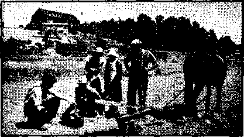
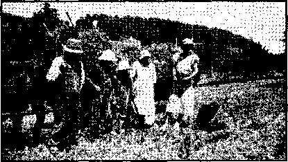
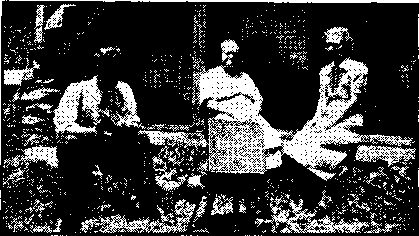

■ The Supreme Court, on. Trial
British Comment
New Government
. Jesus ‘Found Guilty of Sedition’
Under the Totalitarian. Flag
In “Care of the Reverend Mother”
Counsel by J. F. Rutherford Invisible Warrior Protectors
Pius XII’s and Stalin’s Comrade
Published every other Wednesday by WATCHTOWER BIBLE AND TRACT SOCIETY, INC.
117 Adama St., Brooklyn, N. Y., U. S. A.
Editor Clayton J, Woodworth
Bualnei* Manager Nathan H. Knorr
Five Cent* a Copy
fl a year in the United States
11.25 to Canada and all other countries
NOTICE TO SUBSCRIBERS
Remittances; For your own safety, remit by postal or express money order. When coin or currency Is lost in the ordinary mails, there is no redress. Remittances from countries other than those named below may be made to the Brooklyn office, but only by International postal money order.
Receipt of a new or renewal subscription will be acknowledged only when requested. Notice of Expiration is sent with the journal one month before subscription expires. Please renew promptly to avoid loss of copies, Send change of address direct to us rather than to the poet office. Your request should reach us at least two weeks before the date of issue with which it is to take effect. Send your old as well as the new address. Copies Will not be forwarded by the post office to your new address unless extra postage Is provided by you.
Published also in Afrikaans, Bohemian, Danish, Dutch, Finnish, French, German, Greek, Hungarian, Japanese, Norwegian, Polish, Portuguese, Spanish, Swedish, Ukrainian; also special Australian edition in English.
OFFICES FOR OTHER COUNTRIES
England 34 Craven Terrace, London, W. 2
Canada 40 Irwin Avenue, Toronto 5, Ontario
Australia 7 Beresford Road, Strathfield, N.S.W. South Africa 523 Boston House, Cape Town
Entered as second-class matter at Brooklyn, N, Y., under the Act of March 3, 1879,
Story of Uncertain Ago
A man said to his son: “Son, here are a team of horses and one hundred chickens; go through the country and where you find the wife apparently in authority leave a chicken. If, on the other hand, you find the husband ruling, leave a horse.”
After the boy had left his seventy-ninth chicken he came to a place where it seemed that the man was ruling. In answer to his inquiry the man said: “Young fellowr, I would have you understand that I am the boss of this ranch.”
“All right,” said the boy, “you get a horse. Which one will you have, the bay or the gray !”
Upon reflection the man said, “I want the gray”; whereupon the wife gently took him aside and whispered a word or two, then he said, “I believe I’ll take the bay.”
“Oh no, Missouri,” said the boy, “you’ll take a chicken.” ■
Where the Argument Started
“Rastus,” said the judge, “you are accused of disturbing the entire neighborhood on Tuesday night; what have you to say for yourself !”
'‘Well, suh, it was' this here way. Me an’ Lucy had an argument; she call me a lazy lofah and I slap her down flat. Up she hops an’ smash a skillet on mah haid an’ drop me flat. Den I riz up and welt her one wid a chair, and den she done heave a hot teakettle at me which sho’ scald me quite considerable.”
"I see, and then what happened!”
“And den,” said Rastus slowly, “den we gits mad an’ starts to fight.”—Herbalist.
O Michael I Michael 1
Hostess: I hope my husband wasn’t rude when he asked you to play!
Foreign pianist: Oh no. ’E just ask me that I not play a certain tune.
Hostess: What did he say!
Pianist: ’E say, “Don’t play for the love of Mike.”—Australian Consolation.
Avoidance of Bad Kabila
Host: Will you have a glass of brandy!
Guest: No, thanks; such things can easily become a habit.
Host: Nonsense; I’ve been drinking a glass of brandy every morning and evening for twenty years, and it hasn’t become a habit.
CONSOLATION
"And in His name shall the nations hope.”—Matthew 12:21, A.R.V.
Volume XXI Brooklyn, N. Y., Wednesday, June 13) 1940 Number 541
The Supreme Court on Trial
EVERY true American is interested in the Supreme Court of the United States, because it, not the Congress, not the president, is the government of the country. Congresses and presidents come and go. They legislate and administrate wisely or unwisely, but what they do is not final for the people. Sooner or later their acts come before the Supreme Court, and then that body decides for all the people whether, in that court’s judgment, the laws or administrative acts shall be upheld or set aside.
It was therefore a matter of greatest interest to every true American when the issue of the enforced saluting of the American flag eame up, and it was and is a matter of public and profound concern that Jehovah’s witnesses were involved and that Judge Rutherford, president of the Watch Tower Bible and Tract Society, and member of the New York Bar, appeared for the little folks and their parents who are in covenant relationship with God and have, in numerous places, been misunderstood and mistreated because thereof.
Judge Rutherford’s address to the Supreme Court is to be found on pages 20-24 of -Consolation No. 540. It is usual practice in that court for the justices to interrupt frequently, so that each point may be made clear as the speaker goes along. In this instance this splendid summation was given without a single interruption, excepting only the one remark at the outset, by Mr. Justice McReynolds, that he was hearing with difficulty.
That unintentional miscalculation of the acoustics made necessary the repetition of the statement that Jehovah’s witnesses have been in existence for five thousand- years. Some simple hearts, including that of this writer, would be of the opinion that the great Jehovah God and His King, Christ Jesus, are so interested in that fact that they wanted it repeated, so that all might know that Jehovah’s witnesses are not something new.
Did you ever stop to think that Abel, the first one of the human family to pass into death, was one of Jehovah’s witnesses? And it is certain that this was well over five thousand years ago. Notice how it reads in the chapter devoted to brief biographies of the faithful witnesses of long ago, who will be back here in the flesh, and in perfect health, in the very near future:
By faith Abel offered unto God a more excellent sacrifice than Cain, by which he obtained witness that he was righteous, God testifying of iiis gifts: and by it he, being dead, yet speaketh.—Hebrews 11; 4. '
Cain attempted to decide how Abel might or might not worship God. In whose shoes would you wish to be for the everlasting future, those of Cain, or of Abel ?
Limitations of Caesar
Judge Rutherford made it plain as day that Jehovah’s witnesses are necessarily obedient to the Creator; their covenant with God makes that their first object in life. And that makes them the best citizens of,any State that has reverence for the Giver of all life. They obey the Creator first and then the State. If the laws are right laws there is no disobedience to either. If the State errs by interposing a law that is contrary to God’s law, then the State is the disobedient one. These things are not stated in legal terminology, but as seen by a spectator.
In the brief,. Appendix A. attention was drawn to 12 states (and others)'where little folks in covenant relationship with God have been denied the right to attend the publie schools and been whipped, choked, threatened, taunted, knocked about, and denied toilet privileges and medical attention because they refused to put the State above God, as is required of all persons in Germany, but persisted in obedience to Exodus 20:3-5, which reads:
Thou shall have tio other gods before me. Thou shalt not make unto thee any graven image, or any likeness of any thing that is in heaven above, Or that is in the earth beneath, or that is in the water under the earth; thou shalt not bow down thyself to them, nor serve them.
It would seem as if any person wuth good common sense ought to be able to see that there is something wrong in Germany when every citizen is required to heil Hitler in a set fashion or be in danger of being exterminated. How' docs it come that in America the manner in which the flag is saluted is almost identical with tire manner in which Hitler is helled? The arguments at Washington were intended to settle this matter. Judge Rutherford, in his argument, quoted the words of Judge Clark, that “the salute in this case is very like that of the Hitler regime'-’, as well as referred to the fact that in Germany Hitler confiscated the property of Jehovah’s witnesses (because thev did not put him ahead of God).
TFfto Is Supreme?
In the course of his argument that Jehovah always takes care of His covenant people if they are obedient to Him, and courageous in the doing of His will, Judge Rutherford made some statements that move one mightily. You can afford to read once again three paragraphs on this from page 23 of No. 540:
It was at the time of the Persian empire, when the covenant people of Jehovah had been taken over to that country, that the state made the totalitarian rule that every man should bow to Haman as he passed out the gate. A Jew named Mordecai sat at the gate at the direction of the king. He refused to bow. He was sentenced to death. Because of his faithfulness God delivered Mordecai.
Daniel was another of the Hebrews in a covenant to do the will of Almighty God. The state made a law that no man should present a petition to anybody except the king. Therefore Daniel could not pray to his own God. In defiance of that law and in obedience to Jehovah God Daniel knelt at hie open window and prayed to God. He was brought to court and found guilty and cast into the lions’ den. Almighty God delivered him, unharmed.
Three other Hebrews, Meshach, Shadrach and Abed-nego, were required by the law of the state, a totalitarian one, if yon please, which practiced a totalitarian religion, these men were required that they should how down at the sound of the music. They refused. They said to the court, ‘We cannot be obedient to that law; we must obey our God.’ They were east into the fiery furnace. Because of their faithfulness to Almighty God, He delivered them unsinged.
The bitter truths that in Germany today six thousand of Jehovah’s witnesses linger in filthy prisons because they do not heil Hitler, and that in the State, of New Jersey it is now illegal for any parent to read Exodus 20: 3-5 to his child, must have made a deep impression on the Court, as well as the following from the peroration, which stirs one to the depths:
In the marble above where this honorable Court sits the builders inserted a slab containing ten numbers which I presume represents what is known in the Scriptures as the ten commandments. That is a splendid recognition of the Divine law, and the courts of America should follow it. The founders of the government of the United States and those who wrote the Constitution of the United States likewise recognized Jehovah God and His law as supreme. The writers of the Constitution of the State of Pennsylvania also acknowledged the supremacy of Jehovah God and His law. Therefore, those men, as shown by the very langriage of the Constitution, both of the United States and of Pennsylvania, were witnesses for Jehovah. I may be permitted to call attention to this; that at the opening of every session of this Court the crier announces these words: “God save the United States and this honorable Court.” And now I say, God save this honorable Court from committing an error that will lead this people of the United States into a totalitarian class and destroy all the liberties guaranteed by the Constitution.
Judges Clark and Maris
Besides his own analysis of the legal aspects of this issue, and the citation of no less than 73 passages in the oldest and most important lawbook in the world (The Holy Scriptures), Judge Rutherford was able in his brief and oral presentation to cite the following from decisions of eminent judges in Pennsylvania who have had the courage and honesty and statesmanship to stand by America and the Bible in a time when the whole world seems to be going rapidly mad imitating the follies of Hitler and his comrades;
In these days, when religious intolerance is again rearing its ugly head in other parts of the world, it is of the utmost importance that the liberties guaranteed to our citizens by the fundamental law be preserved from all encroachment,—Judge Marie in the Trial court. 1
Compulsory flag saluting is designed to better secure the state by inculcating in its youthful citizens a love of country that will incline their hearts and minds to its more willing defense. That particular compulsion happens to be abhorrent to the particular love of God of the little girl and boy now seeking our protection. One conception or the other must yield. Which is required by our Con-stitation ? We think the material and not the spiritual. Compulsion rather than protection should be sparingly exercised. Harm usually comes from doing rather than leaving undone, and refraining is generally not sacrilege. We do not find the essential relationship between infant patriotism and the martial spirit.—Judge Clark in the Court of Appeals.
Don’t overlook the fact that history has been making in this country while this issue has been up, and that it is self-evident that whether the decision be one way or the other the Supreme Court of the United States has before it the issue “Is God or the State supreme?” Needless to say, this implies that the Supreme Court itself is on trial before the bar of God, and the decision will be of immense significance in the lives of every man, woman and child in this country.
British Comment
By J. Hemery (London)
• The inevitable pressure of the war costs is beginning to be felt. The country waited for the chancellor of the exchequer’s Budget with more of interested curiosity than anxiety; for the fact of very heavy expenditure is accepted and submitted to. It is known that the daily cost of the wartime approximates six million pounds a day, and that it must increase to at least seven million before the year is out. The Budget contemplate^ raising about thirteen hundred million during the ensuing year by the usual methods of taxation, or about one hundred million more than in the year that ended March 31. The income-tax goes up to 7/6 in the £1; beer and whisky are taxed more heavily, and tobacco and matches are included in the increases. Taxes on sales (but not foodstuffs) are to come into operation, and public companies are to be limited in payment of dividends to 4 percent per annum, and coupled with this is a prohibition of issue of bonus shares. Probably the chancellor has an eye on the profits of the great financial and business concerns which “earn” and pay in dividends at present at a much greater rate than 4 percent. Perhaps he will make a raid on these monies as expenditure grows. The tax that is immediately felt most is an increase in postal rates: letters are to cost 2|d. each instead of l|d., and post cards are increased from 1 d. to 2d. Foodstuffs are not included in the increases; on the other hand, the Government is spending one million pounds a week in subsidies in order to keep retail prices low. Generally speaking, about ten percent is added to the taxation of last Budget. In order to obtain the other nearly one thousand million pounds required during the year a push is to be made to get the people to invest in Savings Certificates and Defense Bonds, and, no doubt, other loans to the Treasury" will be brought forward. The cost of living figures published by the Government remain fairly level; but, as these are concerned only with foodstuffs, they do not reveal that there is an all-round increase in the householders’ costs. The Government seeks to avoid inflation, but the fact that.a £1 note does not, purchase as much as it did is one of the things that has to be faced, and is felt most by the majority of the people. There are many other “costs” of war besides those represented in the Budget, whether that of the nation dealt with by the chancellor or that of the humble household. With the outbreak of the war in Scandinavia the eost of life, and the maiming of the fathers, husbands and sons, is having to be revealed. There is no spirit of discontent manifest, but there is a realization that the nation has entered into a conflict which, on the peril of its existence, it must see through.
• When the Government got its Military Act passed it made a provision for full freedom from military service for all who, on whatever reason, could show they had a truly conscientious objection to such service. The tribunals which were set up in various parts of the country to try these objections have, without doubt, dealt fairly with the young men who have come before them. They have heard some peculiar reasons advanced, and in very many cases have determined that the provision was being misused, or that it was not conscience, but some other reason that was in the mind of the applicant for freedom. With the exception of the tribunal in Newcastle Jehovah’s witnesses have had little difficulty in stating and manifesting that their consecration to Jehovah was a real matter of conviction, and they have been retained on the list of conscientious objectors, with the resultant freedom to continue in their service for Jehovah. The chairman of the Newcastle tribunal, Judge Richardson, has allowed himself to manifest a bias, and has made insulting remarks from the chair. His conduct has been such as to cause a member of Parliament to bring it before the notice of the House of Commons, and to ask the Home Secretary to have this man removed from his position.
The position of these conscientious objectors threatens to become very uncomfortable. A cry is being raised that these men, freed from military service, should receive no more in wages than the men in the army are paid. Some workmen refuse to have objectors working with them; but there is no offer from these workmen who are kept at home in what the Government styles “reserved occupations”, and where they get good wages, to say they are willing to take a rate of pay such as they would enforce on the conscientious objector.
At one of the tribunal courts a Methodist “reverend”, appearing in support of a young man’s conscience, said, “Our men are now trained in the modem view of the Bible; therefore the question of the Old Testament wars does not bother us at all, because our doctrine of progressive revelation taught by all Methodist scholars and among noble scholars throughout the church relieves us.” No doubt he spoke truly as for Methodists: they, like all other religionists, use the Bible for what they can get out of it. Jesus, whom they profess to follow, will not own them as such. He always showed that the writings these men call the Old Testament wrere the Word of God, ■ the sacred Scriptures, which foretold His coming and His work, and which were to be fulfilled in every jot and tittle. But these modernists 'know more than Jesus knew1, and it suits them in the interests of their profession to profess to be His disciples while yet they are unbelievers. The parson did not succeed in convincing the tribunal that his young friend was one ■who should be unconditionally registered as a conscientious objector: he must find an occupation agreeable to the tribunal.
• The Occult Review pokes fup at an item of air-raid protection. A Roman Catholic priest giving advice to his flock, if any of them are in the danger of an air raid, tells them to sprinkle the house and furniture with holy water, whenever an air-raid alarm is sounded. “The act,” he says, “is symbolic of your appropriation of the church’s prayer that whatever this water touches may be protected.”
Evacuation Difficulties
• Comment has previously been made of the great changes in the domestic life of thousands of town and city dwellers. Not only "were the children numbering many hundreds of thousands removed from their homes, but mothers also were sent out into the country. As has been reported, the scheme has proved a failure: at the present time most of the children are back to the streets of the towns, but -even yet their regular schooling is not in working order. Undoubtedly the Roman Catholic church is greatly at fault in the failure of the scheme. Many of the business houses are bringing their staffs back to London, though the Government continues its policy of evacuating its London offices. The following from the Economist gives a side light on some of the conditions of business evacuation :
LONDON FIRMS IN THE COUNTRY
“Cases abound when hasty improvisation and needless parsimony have led to the occupation of temporary premises so inconvenient that both the efficiency and the well-being of staffs are gravely impaired,” says the Economist.
“One of the best-known and wealthiest of City firms, for instance, houses a whole department in a garage—in a house where communication under cover between department and department is impossible and where there is no internal telephone; many members of its staff travel two or three hours a day by bus to and from work.
“Another hardly less important firm is quartered in huts that are not weather-proof. Another is settled in a district where high rents and a housing shortage make it impossible for even well-paid executives to live much nearer than twenty miles away. Another has no office furniture at all.
“These are not arguments against the wisdom of evacuation; most firms have done very much better than this. They are simply proofs that many firms have not planned and carried out their evacuation properly, any more than the Government did in the case of schools.” '
Listening for Air-Raiders
• A. M. Low, in his new book Modern Armaments, says,
The safety of millions may depend upon the skill of acoustical engineers . . . for sound detection has become a very important part of defence against air-raids. The sound detectors are really the first line of defence, if we exclude observers of ships at sea, and even they may use sound detectors. An airplane can be heard long before it can be seen . . . with special instruments designed to catch the faintest sounds or to amplify them until they can be distinctly heard. To the skilled observer the sounds indicate not only the direction of the approaching planes, but also their number, probable type and approximate speed—all important information for the other units of defence, the searchlights, gunners or interceptors. The fact that it is sound which betrays the presence of bombers has led aircraft constructors to seek a silent machine : an ideal very difficult to achieve.
But, whatever precaution is taken, the facts show that raiders get through to their objective, and there is no means of stopping the “dare-devil” young men who are set to do their job. It is a terrible thing to consider that battles are fought in the air perhaps 30,000 feet above the earth. These are some of the terrible things brought about by the ingenuity of men using the powers of nature for the destruction of men and their goods: but that greater terrors are to be seen and felt by mankind as a whole is certain from the words of Jesus, who said that in these days into which we are now entered there should be ‘fearful sights and great signs from heaven’. (Luke 21:11) It seems that nothing but manifestations of the intervention of heaven will convince men that God purposed to set up His kingdom, and that He has witnessed to this, now for many years. The events now shaking the world to its foundations are physical facts fulfilling the great prophecy of Jesus relative to His return and the setting up of the kingdom of heaven; and the message which tells the way of escape from the just anger of God against the nations and the people who stand in the way of the truth is nowr being told to the ends of the earth.
• The church of Scotland, through its treasurer, reports that though its income is lowering it received from all sources during 1939 the amount of £1,327,000. Out of that it spent some money in publishing attacks on Judge Rutherford and Jehovah’s witnesses. It- has no answer to the truths ivhieh these carry to the people, but it follows such counsel as unscrupulous advocates are said to take when, being unable to answer the facts of a ease, they should 'abuse their adversary’. Probably they w'ill expend a little more of the money they get out of the people to the same end; for they show their hatred of the truth concerning the present “strange work” which Jehovah is doing ih the earth. They, with other religionists, are like the scribes and Pharisees of Jesus’ day—they have an inheritance and they intend to keep it. The result in their case will be the same as that which befell the enemies of Jesus in His first advent.
• At the present time all sections of the nation, except a few Communists, are in agreement that the one thing to do is to get success in the prosecution of the war, but there are many diverse opinions about the after conditions. That the tremendous strain on the financial position of the whole land will very materially affect the nation, and will weaken it economically, is apparent to everybody, and it is beginning to be realized that the present war will affect it much more seriously than the great war of 1914-19,18 did. The Labor party, now co-operating wholeheartedly with the Government, intend, when the victory, taken for a certainty, is gained, to see to it that in the readjustment the people 'whom they represent shall get a proper share of the social reforms for which they stand. The money world, whether the businesses which deal wholly with money, or the big business people, hope that they will be able to carry on again, and recoup their deleted fortunes, or at least to make sufficient to enable them to enjoy their good things of their usual manner of life. The “old nobility”, great land owners, already reduced by changed conditions, and the heavy death duties which now must be paid, know that they will be further impoverished, and that the pushing of the Labor party will compel them to relinquish their holdings of land now given over to deer forests and shooting. (There, are millions of acres in Scotland reserved for “sport”, formerly cultivated, and w'hich must again come under the plow.) Religionists fondly hope that when the war is over they will be able to carry on. They well understand that the dogmas to which they have held will have to be buried; but they are ready now to allow' them to go, if only they can keep religion alive, and preserve their “kingdom”. The Roman Catholics, confident that the church which has stood the storms of the centuries will survive, expect that soon their church will prove to be the rallying point, the pope the center to which all the other sections of religion will turn. They expect there will be another League something like the former League of Nations, but with the pope as its head. Not one of these many sections heeds the message of warning that Armageddon is next in turn, and Revelation 11:15 fulfilled.
♦ The zone servant and other publishers were out in the service and one of the publishers said, “We did not get that house—a clergyman lives there. We saw his name on the plate beside the door.”
“Well, I will call.”
I was met at the door by an old, kind-faced gentleman. I informed him I was doing a Christian work and had a message of importance, that it was free and put him under no obligation. The “Snare and Racket” began to do its part, but it had just started, when the invitation was given to come in with it, A table was cleared and he said to his wife, “Shut off that war news and come here to listen to this message with me,” “I mean it. Shut that bad news off and come and hear something good.” They both gave close attention to the record, “Snare and Racket.” At the close he said, “Young man, Judge Rutherford is telling the truth. You are in a good work. I am 79 years of age, have been teaching, traveling and lecturing for a number of years. My last lecture was on the difference between religion and Christianity.” He pointed out Riches, Enemies, and other publications in his large library. I pointed out Salvation and Government and Peace. ‘No, he had not seen them.’ “Now, I presume you accept about a 25c contribution for those books ?”
“Yes.”
“Well, I will make a proposition,” he said to me. “Now, you give me the 25c.” Much hesitation. Then he said, “I’ll give you 50c, then you can give me the books.” He wished me the Lord’s blessings in the service.—Ohio, Zone 5.
♦ The Canadian lady said, “Oh not I could not read those books. I am a Catholic, and we are as far apart as night and day.” The publisher replied, “That is very true; you are in the dark and I bring you the light.” The lady smiled and took some literature.
♦ Just before Christmas our three children, Carl, aged 12, Pearl, aged 10, and Mary Lue, aged 7, refused to draw names for Christmas and also refused to take any part in the Christmas program. Three members of the board of education made a special visit to see us. They told us our children would have to take part in the program; they must also salute the flag ; they had been to see the superintendent ; that was the law; if the children did not obey they would be expelled from school.
I sent them back and almost every day the teacher gave them pieces to say, and they refused to learn them. On Wednesday, December 20,- all three went to school as usual and the principal made the two small ones get up on the floor, but they refused to sing, Carl’s turn came next. The teacher proceeded to abuse him, knock him around and pull his hair until, Carl said, it seemed as if he was pulling his hair entirely from his head. The teacher failed in his objective and the ease went again to the board.
Ere long one of the board came again, but in an altogether different humor, saying, “We are having trouble with your children at school, but we have decided that as they do not want to take part in the program we will release them until Monday a week; then they can start in school and take their regular lessons ; ■ vre do not want to put them out of school.”
The children all work in the truth, especially the little girl. She takes the phonograph and makes the houses just like the rest. There has been no more trouble, and we are very thankful. We are especially thankful that we can have just a small share in the greatest work on the earth.—Mr. and Mrs. E. C. Williams, Illinois. .
♦ The Associated Press knows all about Jehovah’s witnesses, but one would never suspect it from the stuff they print. They sent out a dispatch from Athens, detailing the arrest of 74 believers in God’s kingdom. The dispatch referred to those arrested as Chiliasts, a clever way of disguising the fact that they are Jehovah’s witnesses. There1 was the usual piffle about “illegal propaganda”, as if the proclamation of God’s kingdom wrere either illegal or propaganda. The Associated Press does all it humanly can to poison truth at its source.
Jehovah’s Kingdom publishers’ outfits in Saskatchewan; comfortable; practical.
♦ The German Consolation (Trost) reports that in a Bavarian village one of Jehovah’s witnesses died and her husband, though not himself a witness, erected over her grave a stone on which were inscribed the words “Holiness unto the Lord Jehovah". Thereupon the Nazi leaders, when they came into power, together with the church council, served written notice that the inscription on the tombstone must be removed, as they considered it an insult.
♦ The pioneers must be very precautions to avoid arrest. One publisher, for instance, working a community with a goodly number of goat-like inhabitants, put a black kerchief around her shoulders, covered her head likewise, and thus went forth, After having worked a part of the community, she was aware of the fact that one of the goats was in action, and in a short time he came along with two police-soldiers. The publisher took refuge in a by-street, changed her black kerchiefs for some of another color, and moved quietly on in the direction of the two policesoldiers ; these asked her whether she had seen a woman wearing black kerchiefs, to which the publisher replied she had seen one, evidently in a hurry, running in the other direction. The police-soldiers and their spy went off running to find her, and the publisher went quietly home.—1940 Yearbook, of Jehovah’s witnesses, page 155.
♦ Wartime gives the religionists opportunity to express the murder that is in their hearts and thus it is no surprise that a jury in the Roman Catholic city of Alontreal found one of Jehovah’s witnesses guilty of sedition for putting the book Enemies and the booklet Face the Facts in the hands of the truth-hungry. Arthur Tilley could be sentenced to $5,000 line and five years’, imprisonment for putting these precious truths of God’s Word with his fellow men. Jesus was put to death for the same “offense” and—
The diseipie is not above his master, nor the servant above his lord. It is enough for the disciple that he be as his master, and the servant as his lord. If they have called the master of the house Beelzebub, how much more shall they call them of his-household? Fear them not therefore: for there is nothing covered, that shall not be revealed; and hid, that shall not be known. What 1 tell you in darkness, that speak ye in light: and what ye hear in the ear, that preach ye upon the housetops.—Matthew 10:24-27.
Phonograph witnessing in York Co,, Pa., r avals:
1. “Religion is wrong and a snare because it deceives the people. ...”
♦ It is indeed gratifying to see how the great multitude are coining to the Greater Joshua for protection, I met a lady who seemed to be interested but was unable to make an appointment at that time. She promised to let me know later when to call; and, sure enough, in a few days I received a card, I made the back-eall and played the ‘‘Government and Peace” lecture. After the lecture she offered to pay me for my trouble, I told her this is the Lord’s work and it is free. She said she had read some of our books but was confused with other religions. She is so anxious to get an understanding of the truth that she asked if I would come back and help her. She realized that she had such a short time in which to learn of the Lord’s provision. She remarked that she had wasted so many years and had she known the truth she could have helped her children to understand and gain protection. I explained to her how she could still help them. As a result she took the Salvation book, subscribed for The Watchtower, and wishes to attend all the studies.
This shows that there is yet a great work to be done by helping those who come seeking the Lord and that He gives the increase.
I notified the chief of police on Friday that we were going to do some advertising with placard on Saturday night and that if he got any complaints he would know what it was all about. He thanked me for telling him.
We had the march O.K. After the march on the way to the contact point a witness said to me that there had been trouble; so we went to the police station to see about it. One guy got busy in front of the police station and tried to tear the placards off a witness, and did tear up one of the overhead signs. The police came out and jailed him. The policeman who preferred charges against him claims that he knew Judge Rutherford when he was a boy in Missouri and that he has read all his books, which he has been getting from a brother. Also he said that he had been a preacher for thirty years and that he was not in it for any racket and that it was an insult to religious people for anyone to go around with signs saying that religion was a snare and a racket and that it made him hot under the collar and that the signs would have
2. “Because religion is wrong does not mean that the many people who ignorantly practice religion are bad, ...” ■
to eome off the street. The chief of police came in while we were there and said he thought there would be only two or three, that he did not expect so many, that he did not object to the placards but that the overhead signs would have to come off the street. I told him that I would see him later. I did not want to start any kind of argument until the guy in jail had what was coming to him. I heard Sunday night that he had been fined $10 for his trouble.—California Zone 4.
The “Reverend Father” Richard G. Ober stuck his neck out in The Advocate-Tribune of Bloomington, Nebraska, Thursday, March 14, 1940, wherein he tried to make it clear that Jehovah's witnesses ‘are Communis’s, cankerworms, virulent poison peddlers, diabolic prophets, always insulting, arrogant, shewing out attacks upon civilized institutions, provoking class hatred, without education, without morals, hydra-headed hypocrites, wearing masks of decency to cover ugly faces and defiled hearts and souls, the spawn of hell to crush Christianity and our Government with the, phonograph records which they force
upon the ignorant, along with sill;7 books’.
The editor of the Hi ver ton, Nebraska, Review thought that the “Reverend Father” Richard G. Ober was smearing his religion on a little too thick, so in his issue of March 21, 1940, he published the following doublecolumn editorial, calculated to make the “Reverend” Ober adjust his collar and wipe off his chin and vest before he starts the next living illustration of what the Roman Catholie religion can do for a man that surrenders his heart and life and reason to its poison.
THE RELIGIOUS HATBED OS’ IIEIJGION
Conventionally it is accepted that the phrase “hatred of religion” refers to irreligion; but we use it to mean the hatred which one brand of religion has for another brand of religion. As it has been said, “Religion is the worst enemy of religion.” Not until religion stops fighting religion need anti-religivnists be blamed for exposing it.
A bellicose example of the burning hatred of religion for religion came to our desk last week, in one of our exchanges.
The fiery malevolence for a brother Christian society which may7 rankle sinfully in the sanctimonious “soul” of a pretentious “man of the cloth”
3. “Christianity means to follow exactly in the footsteps of Christ Jesus by7 believing and teaching the Bible, the Word of God. . . . ” found a railing valve in that paper through which it, like the malignancy in a sick stomach, belched out its godly rancor.
Religious malice, religious bigotry, religious revenge, religious untruths, religious haughtiness, religious hy7pocrisy, religious uncharity, religious meanness of spirit, were puked on the front of that paper from the spiritually7 mad soul of this preacher of righteousness. •'?]
Below we quote some of the “charitable” names which this clement “man of God” who is commanded, under pain of hell, to “love his enemies”, to “return good for evil”, etc. applied to the sister and brother Christians in his town, with rattlesnake neighborliness. He says, behind the religious mask JUNE 12, 1940
of poltroonish inference, that his Christian brothers and sisters of the wo rid-wide Watchtower Bible Society are: ;
“Cheap but virulent poison, cankerworms, provokers of el ass hatred (he Cno'um his class hatred!), haters of decency (he hates civil decency to his brother Christiana), know-alls without education or definite morals, sellers of silly (rival Christian) books, hydra-headed hypocrites, Ku Kluxers wearing a niask of decency to cover an ugly face that reflects a defiled heart- and soul (he is an authority on the latter organ!), un-American (the same is sold of Humanism) spawn of hell to crush Christianity and our Government.” (Our New Deal government, eh?)
As we have before shown on this page, and we cite this ease as merely another example, taken from factuality, such is the common animalistic stuff of which our holier-than thou religious dis-' pensers of “light and leading” are made.
They7 remind us of the “great spiritua' graces” that issue from the boasted “religious way”! They reveal to us what religious ministers think of each other. They7 show ns that skepticism of religion and an awareness of the racket and the sham that it is are prevalent in religion as well as in the more rational minds outside of it. They7 show us'—the religious ministers themselves—that “religion is a snare and a racket”, as the Christian lecturer, Judge Rutherford, says.
Moreover, they help explain why, after long centuries, half the world is still unconverted to the quarrelsome racket of religion.
Liberty in Jersey City
♦ Why, they even have some liberty in Jersey City! Four of Jehovah’s witnesses were arrested there by Patrolman Richard Murphy (guess bis “church”) for doing what every newsboy has a right to do. But when their ease came up in court the judge on the bench decided that they were not disorderly persons. And that was that.
4. “Those who practice Christianity worship God in spirit and in truth. . . , Christianity is the way to salvation and life everlasting.” (To be continued) .
At Bristol, England, a nun by the fpd Z£5h name of Cecilia Quinn, giving her (lsJ| address as “Care of the Reverend I Mother General”, bestowed her
* kind and loving attention on a boy of 15, an orphan in rare of the institution for the past thirteen years. First she banged his head against the kitehen door, and made him strip and get into a tub of cold water. There she struck him with a stick, threw five pails of cold water over him, and beat him so savagely that he showed 23 weals on his back, four on his chest, and one on each arm. The only punishment this dame received was to be bound to keep the peace for one year. She was and is very religious.
♦ There are many crimes listed on the calendar that are punishable by law. There are many wicked practices clearly seen by men and condemned as being abhorrent to righteousness-loving creatures. But one of the most reprehensible crimes of all, and which is condemned by the Word of God, is the dishonoring of the name of the Almighty by religious organizations that under the cloak of sanctity allow their inordinate love for material gain to run riot by trafficking in human misery and distress.
Bingo games appear such an innocent form Of entertainment, and quite harmless; of course, the Church says so. And the Church should know: it runs plenty of them. Surely there can be nothing wrong in sitting in a bingo game with your numbered card before you, waiting in breathless expectancy for the next number to be called by the droning announcer; it might be the number you want! you might win I And there is the point! You might win a few dollars, a few precious dollars; yes,you might!! but how many dof The one and only winner in this increasingly gigantic racket is the promoter, and the promoter in this case is the chubch (?). What a travesty! Therein lies the wicked dishonoring of God’s holy name by accrediting His chureh with practices common only to the lowest form of racketeering, yet practiced by extreme religionists, the so-called "Church”.
Jehovah’s witnesses were seeking a place of meeting for one of their assemblies; it required that a rather large hall be secured. One such was located, of suitable seating capacity. However, on the date the hall was needed'it was not available. That evening there was to be held a bingo game. There are regular bingo games in this same hall a number of times a week, attended in the daytime mostly by women, who, of course, never forget their cigarettes. Inquiry had to be made of St. Christopher's Chureh to see if the hall would be needed on this particular Sunday evening for their bingo game. It is really touching to see the Lord in such dire need of money; His Church ( ?) must see to it that He has enough money at His Command ; it must be gotten by fair means or foul. How can He carry out His purpose without money ? Precious money!! It does not seem enough that the Scriptures say, “The silver is mine, and the gold is mine, saith the Lord of hosts.” “His church” must add “and all the bingo games as well”.
Inquiry was made in another locality a number of miles away. A hall was found just suitable, large and spacious. When the date was mentioned it was found there was to be a bingo game that evening. St. Christopher’s Church had engaged the hall. It seemed as though “Saint Christopher” was cornering the hall market for his bingo games. At this juncture some pitiable facts were brought out. The statement was made that this is the lowest form of gambling and would not be permitted under any sueh circumstances except under the sanctified promotion of the Church (?). The odds are so great that only a few can win, and that not very much, while the money squandered, as a W’hole, goes into the pockets of the promoters, in this case the “Chureh”. It was said that people come into these bingo games who are on relief. Their faces are haggard and white; they are praying to their “saints” to help them win a bingo so that they can get a few extra dollars to pay their rent. They believe that in some mystical way these “saints” will help them; for is this bingo game not promoted by the Church ? It was further added that these unfortunates, whose misfortunes were being made commercial traffic, spent as much as ten to fifteen dollars a month of their relief money in the hope that. this “sanctified” bingo game would bring them a little added revenue. The “take” is made only by the promoter.
How little does the so-called “Church” realize tiiat we are rapidly approaching the time of the expression of Jehovah's wrath upon all hypocritical organizations, religious, political and financial, and that “neither their silver nor their gold shall be able to deliver them in the day of the Lord's wrath; but the whole land shall be devoured by the fire of his jealousy : for he shall make even a speedy riddance of all them that dwell in the land”! (Zephaniah 1:18)—M. A. Howlett, New York.
Maybe you have never known of Ajthe virgin of Chestochova; but if IV.wJJ you have not, then your education ^as heen neglected. The American bishops of the Roman Catholic Hierarchy issued a statement regarding Poland, and in it said, “With our people we suppliantly beg the Virgin of Chestochova to bring peace and succor to the suffering of Poland.” As the situation in Poland is the direct result of the ideals and activities of the Jesuit-trained Adolf Hitler, why bother the virgin of Chestochova? What has this woman to do with it? What does she know about it? And if she is interested, why did she not take up the whole subject with Hitler direct, without American bishops’ having to ask her to do something she should have done in the first place ?
♦ Cheer up! The pope says he is praying God that He will give His supreme aid to heathenism, as represented by the emperor of Japan, That ought to be worth something, shouldn’t it? Moreover, in his message to the emperor, on the occasion of the 2,600th anniversary of the founding of the Japanese empire, the pope said he wanted present and future emperors of Japan to perpetually enjoy years of happiness. Eugene is a new pope, and maybe he never ran across those many scriptures that say that Jehovah’s new King, Christ Jesus, shall break in pieces and consume all other kingdoms and that His kingdom shall stand forever. Just how there could be such perpetual happiness for rulers when their kingdoms are broken in pieces remains one of the unsolved mysteries.
♦ “The mistake of President Roosevelt has been aggravated by the character of the man that has been selected as his personal representative to Pius XII. Myron C. Taylor is a great admirer of the Italian Fascist’s regime.” On the 5th of November, 1936, speaking in the presence of the Italian ambassador, Fulvio Suvich, at a dinner party in his honor at the Waldorf Astoria, Taylor said; “All the world has been obliged to admire the success of Premier Mussolini in the discipline of the nation” (The New York Times, November 6, 1936). And in the same issue of that paper it reads, “As master of ceremony of that dinner party for the 'Italy-Am eric an Society’ and for the 'American Society of the Royal Italian orders’, Mr. Taylor again remarked that 'those who have had the pleasure of having made frequent visits (to Italy) know of the great progress that has been made’. Without mentioning Ethiopia, he says no one can doubt of the final success of the (enterprise) because ‘today a new Italian Empire faces the future and assumes its responsibilities as guardian and administrator of a foreign people held back, composed of ten million souls.’ ”— Translated from II Mondo, Italian magazine.
♦ At the beginning of the Great War there were 2 ambassadors and 11 ministers accredited to the Holy See. Today there are 13 ambassadors and 23 ministers. A similar notable increase is seen ip the comparative totals of nuncios and apostolic delegates in various countries. In 1914 there were 13 diplomatic representatives of the Holy See in foreign countries. Now there are 38. The number of apostolic delegates was 13. Today they number 23.—Vatican City dispatch in The [Roman Catholic] Universe, London.
♦ No man or woman should be required to stop dead in traffic and repeat the oath for anyone who takes it on himself to go on the prowl for traitors, and the same resentment occurs when, in a public gathering, some loudmouthed fraud says, “We are now going to sing 'The Star-Spangled Banner’, and any dirty traitor who doesn’t get up will get such a going over that he will never get up.”—: Westbrook Pegler, in the New York WorldTelegram.
While seeing a newsreel with a friend of mine some time ago, he got a tremendous kick out of a part where they showed a scene of India. It showed that some old Voodoo billy-goat chaser, who looked as though he had not had a bath for ages, got up on a high spire and blew a long horn, calling the faithful to prayer. Immediately hundreds ran up in nightshirts and flopped down on the ground with arms outstretched, swaying up and down, saying, “Allah! Allah!” My friend asked me if I had ever seen anything so ridiculous, and my reply was, “Yes, Wally. I went to mass one time.” His attitude immediate^ changed, and he wanted to know what was so peculiar about mass. My answer was, “It is all in the way you look at it. Rituals are all the same, only mass is more complicated.” Now Walter and I are not friends any more.—Harold B. Wheeler, Illinois.
l-W OHttM Ji, IkaRqi, Punu
Jwnrwy IMO
lutflfr*' latboay Yiwlcrttl 113 ftW Artnia* Manty,
Sir wd Mata:
ACTtmi Jranei* Bolekt pastor of st. stafiUUm Cfanrth, sprue* 4&*nue, SMieni YnaAylvuiia, h*a eonfnltad st Ln ttfamct to action toward the ralUctUa of eertaiTi dues
OTtag by you to said drarCh,
According to the record*, you I W.oo fcr jconthly collection dues «nd $ for Sunday collection dues, trtfay * total Of ♦143«OO fee, .
HaweW, In order to give you «i opportunity to settle the lutter caltaly and thereby save the ejepms* of court costa, etc., I tall wt proceed toward the &olleation of the afortaild sw of 1143.00 until March 1, 1940. Therefore, it will be to yajr advantage to call at my office on or before March 1, and wke wxm trranftujttt for the paysent of this account.
Very truly
ft. Bound,
♦ It is not of much use for intelligent women to protest to politicians who have demonstrated that they have nothing above their necks but ivory, but the Bergen County Group of the New Jersey Branch of the Women’s International League for Peace and Freedom did that. They sent a resolution of protest to the board of education, Fort Lee, New Jersey, for expelling 12-year-old Roger Morgan because, for conscience’ sake, he refuses to worship any flag. Away over the heads of the politicians, and far beyond their capacity to understand or appreciate the real significance of their remarks, the women said:
While not taking issue with his practice in public schools we feel that no school board has the right to deprive a child of free education on any ground which denies his liberty of conscience.
We wish to point out that many of our forefathers came to this country for freedom of conscience and that Washington wrote: “In my opinion the conscientious scruples of all men should be treated with great delicacy and tenderness; it is my wish and desire that the laws may always be as extensively accommodated to them as due regard to the protection and essential interests of the nation may justify and permit.”
We feel that the board of education has lost the opportunity of demonstrating the principles of freedom of conscience upon which our democracy rests. We wish to point out that it is the totalitarian state which places the state above conscience and the democratic state which values and cultivates the conscientious citizen.—In Bergen Evening Record.
Catholic Herald Praises Duke
♦ The London Catholic Herald had words of fulsome praise for the duke of Windsor’s radio address on the subject of peace, and in the same article happened to mention that “it is time that we British Catholics faced up to the fact that we are as profoundly suspected by the average man and woman as we have been ever since the days of the Armada”. To which one may add, “With good reason.” Consider only the Catholic Herald's misrepresentation of the work of Jehovah’s witnesses, and the manner in which Catholics in England treat those who are engaged in that work. The average man and woman would be the veriest fools not to be “profoundly suspicious” of all of the Hierarchy’s tactics, including its endorsement of the duke of Windsor, through the London Catholic Herald. The duke should make a public statement disclaiming any connection with the Hierarchy or its press.
(To be continued)
IT IS estimated that more than a ■ million Americans will read this issue of this magazine. These million readers are face to face with death in the near future. The pres
ent world war has already cost millions of lives, and is bound to cost many more before it is ended. It is constantly spreading and taking new nations and new territories into its orbit. . It is unleashing fresh terrors daily, and each of these seems worse than those of the day before. Terrible as are the destructions already wrought, they are but a. feeble foretaste of what will happen at Armageddon, following soon now.
This is a call to the people of good will toward Jehovah God who desire peace and righteousness and who love the Lord to cast in their lot with Jehovah’s people for the five days, July 24 to 28, when the Theocratic Convention of Jehovah’s people takes place.
This is vacation time, and what vacation could compare in benefit to you with one that may help you definitely to be spared in Arma-■ geddon and aid your loved ones to do the same? All of God’s Word is right to the point, including the description of the present generation, that they are “lovers of pleasures more than lovers of God”. (2 Timothy 3:4) You are familiar with the scripture, and you must have noticed the absence among God’s people of the public games which many persons in “Christendom” seem to consider one of the most important things in life. .
The people of God in ages past were instructed to assemble at least twice a year and to have a good time living in booths and learning more about God and His law. How dif' ferent from the heathen of Rome, who had in the Circus Maximus seating arrangements for 300,000 people, where they could and did see Christians butchered or covered with pitch and burned as torches! In the year 72 (A.D.) the Circus Maximus was filled to capacity every day for 100 consecutive days. If there had been newspapers in those days, they would . have had solid pages about what went on at the Circus Maximus. Maybe you have seen solid pages about sports, but you never see any solid pages about God’s Kingdom, The Theocracy, the latest unfoldings of God’s Word, or about the activities of Jehovah’s witnesses, which, nevertheless, constitute the most important activities in the earth today.
Where the Convention Will Be Held
There are many reasons why Columbus, Ohio, near the center of population of the United States, constitutes an excellent location for much of the population of the United States and Canada, and, accordingly, the Ohio State Fair Grounds, in that city, will be the center of the convention activities of Jehovah’s people during the days mentioned. Judge Rutherford, the president of the Watchtower Bible and Tract Society, will open the convention on Wednesday, July 24, will deliver the opening address, and will be the speaker on the topic “Religion as a World Remedy”, at 4 p.m., Eastern Standard Time, Sunday, July 28, at the convention peak.
Besides the main convention at Columbus, there will be three conventions in New England; Bangor, Maine; Boston, Massachusetts; and Burlington, Vermont. The Sunday address by Judge Rutherford w-ill be delivered to these cities by direct wire, and the time for the address in such cities will be 4 p.m. Eastern Standard Time, or 5 p.m. Eastern Daylight Saving Time. '
There will be six conventions in Dixie Land: Atlanta, Georgia; Jackson, Mississippi; Montgomery, Alabama; Tampa, Florida; Savannah, Georgia; and Memphis, Tennessee. The first three will have special arrangements for the assembly of the colored, who are, of course, welcome at any convention. The time for Judge Rutherford’s address is 3:00 p.m., Central Standard Time.
In the Southwestern states conventions will be held at the same time at Beaumont, Texas; Fort Worth, Texas; San Antonio, Texas; Kansas City, Missouri; and Tulsa, Oklahoma. The time for Judge Rutherford’s address is 3:00 p.m,, Central Standard Time.
In the Northwestern states there will be conventions at Des Moines, Iowa; Lincoln, Nebraska; Duluth, Minnesota; St. Paul, Minnesota ; Fargo, North Dakota; and Sioux Falls, South Dakota. -In each of these places the time for Judge Rutherford’s address is 3 p.m., Central Standard Time.
In the Rocky Mountain states there will be conventions at Boise, Idaho; EI Paso, Texas; Great Falls, Montana; and Pueblo, Colorado. Judge Rutherford’s address at Columbus, Ohio, will be heard at these places at 2 p.m., Mountain Standard Time.
On the Pacific Coast there will be eonven-tions at Long Beach, California; San Diego, California;. San Jose, California; Medford, Oregon; Seattle, Washington, and Spokane, Washington; where the address of July 28 will be heard at 1 p.m., Pacific Standard Time.
The address will be heard at Honolulu, Hawaii, at 10:30 a.m.
Bverv reader of Consolation magazine is invited to attend one of these conventions and bring his wife and little ones. There he will have opportunity to meet many who have the same hopes as himself. He will have an opportunity to distribute some of the IS,000,000 handbills inviting “other sheep” to attend one of these conventions. He will have a chance to put Jehovah’s Kingdom magazines. The. Watchtower and Consolation, into the hands of the truth-hungry, lie can have a share in putting out bound books and booklets. He can engage in information marches. He will have opportunity for immersion if he brings his bathing suit. If he plays well on any musical instrument, he may have an opportunity to exercise his talent in that direction. He may address his letter on the subject, Watchtower Convention Committee, 117 Adams St., Brooklyn, N. Y. At every convention there are doctors and nurses to look after the needs of those who at such a time show poor judgment in what they eat. There are nurseries to look after the children.
At the Columbus grounds there is ample parking space for cars, and the service is free. Bach convention will have a book room, a check room, and an information booth where people can receive mail and telegrams. Each convention will operate its own cafeteria, where wholesome meals will be served at the Cost of food and expense of operation.
‘Choose Life, that You May Live’
On May 22 Richard E. McMillan, United Press staff correspondent, radioed:
The Allies retook Arras on' the plains of Picardy today . . , hut what they got for their dead was a pile of smoking ruins. . . . the town was in the path of the German air fleet, houses were gaping ruins. The next time the German planes eame over the railroad station was almost obliterated. Roads erumbled under the bomb blasts. Bridges were blown up. hires raged everywhere. ... A British., officer said that “it. would be impossible for anyone who had been in Arras a week ago to recognize it today”. . . . When the Germans entered Amiens, they found it gutted or still aflame. Before they entered, a rain of incendiary and high-explosive bombs had continued intennittently for days and nights. Adding to the confusion a great flood of refugees was traversing the town on their way to safety in the rear. Parachutists and spies contributed still further to the alarm. Parachutists alighted on roads and shot down motorists and seized their cars. Or they used their own portable motorcycles, which they had brought down from the skies, to speed to their objectives or concentration points. Spies were active, spreading wild rumors.
Today the combine of Eugene Paeelli. and Adolf Hitler terrifies all nations. The French government officially admits that the most important key to the defenses of northern France, i.e., a certain bridge across the Meuse, was left unguarded at a time when the whole world knew that the Herman tanks were rushing across Belgium. In other words, some tool of Eugene Paeelli left the door wide open for the most honored son of the Catholic church, Adolf Hitler, to enter and sweep over the plains of Picardy with the terrible results above delineated.
At this moment the government of the United States is frightened half out of its wits at a foe three thousand miles away with which it is as yet not officially at war. Billions are now being spent in trying to make this country’’ safe, but America has millions of devoted tools of Paeelli and Hitler who would not hesitate one moment, to put this-country under the jurisdiction of “Reverend Father” Coughlin's Christian Front or its immediate perhaps yet unnamed successor.
There is no other place of safety than in the Kingdom of God. Why delay any longer to take your stand on the side of The Theocracy, and against the God-dishonoring religions that have lied about the Creator until they have brought the world smack up to the threshold of Armageddon?
For rooms and hotel accommodations at Columbus, Ohio, address immediately, Watchtower Convention Committee, 1874 S. High St., Columbus, Ohio, giving the following information, and preferably none other, and in the order stated: Name, street, city, state or province. Nationality, and white or colored. Date you expeet to arrive in the convention city. Date you will leave. Kind of accommodation you desire-- residence or hotel. Number of rooms required. Number of persons in party. Number of married couples. Number of single men. Number of single women. Single or double bed. State definitely the amount you want to pay per person per day.
ELISHA, the anointed prophet, was at a city named Dothan. The enemy Syrians sent a great host to take him captive. After Elisha’s servant saw that great army around the city where Elisha was lie was very much frightened. In despair lie appealed to Elisha. Then Elisha gave full assurance to his servant, saying: "‘Fear not; for they that be with us are more than they that be with them.” This shows that there were many in the invisible host and that they were there at the direction of Jehovah God to protect Ills servant. “And Elisha prayed, and said, Lord, I pray thee, open his eyes, that he may see. And the Lord opened the eyes of the young man; and he saw: and, behold, the mountain w'as full of horses and chariots of fire round about Elisha.” (Recorded at 2 Kings 6-. 12-17) Someone was in charge of the horses and chariots of fire, apd Elisha knew that according to God’s arrangement the angelic host was present and would exercise greater power than that which could be exercised by the visible enemy composed of mere human creat.ures.
Later the Assyrians came up against Jerusalem and defied Jehovah and His people. In one night 185,000 Assyrians fell dead before the walls of the city. Without a doubt God’s invisible host did that work. The record is that Hezekiah, the king of Jerusalem, said to the people: “Be strong and of good courage, be not afraid nor dismayed for the king of Assyria, nor for all the multitude that is with him; for there is a greater w-ith us than with him: with him is an arm of flesh; but with us is Jehovah our God to help us, and to fight our battles.”—2 Chronicles 32: 7, 8, A.R.V.
The record is that then the “angel of the Lord” went forth and smote the eamp of the Assyrians. Manifestly, “the angel of the Lord” means the one in charge of the invisible army, that is to say, the captain of the host leading the fight. It is reasonable to conclude that God committed the work of protecting His people to His holy angels and that they carried it out in an orderly way.-—Isaiah 37: 36.
Amongst all the true. Israelites Jesus was the chiefest. He gave testimony that God’s holy angels are ministering spirits sent to minister to the “heirs of salvation” particularly to the Captain of that great salvation. One night a mob, armed and directed by the Devil through his human agents, the religious clergy, sought Jesus to put Him to death. The disciple Peter resorting to the sword in defense of his Master, Jesus said to Peter: “Put up again thy sword into his place. . . . Think-est thou that I cannot now pray to my Father, and he shall presently give me more than twelve legions of angels'?” (Matthew 26:52, 53) Jesus was not in command of the angels, but declared that upon His petition His Father would send them to serve Him. Just previously Jesus was in the garden of Gethsemane undergoing great agony and suffering, and an angel ministered unto Him: “and there appeared an angel unto him from heaven, strengthening him.”—Luke 22:43.
This proves that while Jesus was in ther flesh Jehovah God delegated authority to His holy angels to protect and comfort Jesus, When He was born the angels brought the glad new-s to the peoples of earth, saying: “Glory to God in the highest; and on earth peace to men of good will.” (Luke 2:14, Catholic Douay Version Bible) When He suffered and died they were there to render service. When He was raised from the dead the angel of the Lord was at the sepulcher. All this shows that God’s holy angels act in a capacity other than merely that of messengers.
After Jesus had been raised out of death He said: “All power is given unto me in heaven and in earth.” (Matthew 28:18) No longer would there be need for the angels to serve Him for protection. From that time forward the jwwers of heaven and earth must be subject to the Lord Jesus Christ and the angels would have a different function to perform from what they had previously done concerning Him. In support of this it is written: “Jesus Christ, who is gone into heaven, and is on the right hand of God; angels and authorities and powers being made subject unto him.” (1 Peter 3:21,22) The apostle Paul’s argument is that Jesus Christ has been exalted to the highest honor and glory and is at the right hand of Jehovah, and then Paul adds: “And when he again bringeth in the firstborn into the world he saith, And let all the angels of God worship him.”—Hebrews 1:6, American Revised Version.
Paul, comparing the exalted position of Christ Jesus as the King of the Theocracy and Head of the church with that of the angels, says concerning the angels: “Are they not all ministering spirits, sent forth to minister for them who shall be heirs of salvation?” (Hebrews 1:14) That and like scriptures definitely settle the matter that the angels of the Lord, who, of course, are spirit creatures, are sent forth to perform certain functions for and in behalf of the members of “the body of Christ”, the church, while such members are ip course of preparation for the Kingdom, the Theocratic Government.
Concerning the relationship between such and the angels, Jesus said: “Take heed that ye despise not one of these little ones; for I say unto you, That in heaven their angels do always behold the face of my Father which is in heaven.” (Matthew 18:10) These angels here described do not act only as message bearers to present the prayers of “these little ones” or spirit-begotten children of the Lord Jehovah God. As God committed service of much importance to the angels in relation to the Israelites of old, there is every reason to believe that He has done somewhat similarly in respect to His spiritual people whom He has selected for His name as His witnesses. Having in mind that the word “angel” also means deputy or representative, it must be true that the angels assigned by the Lord to look after His church are clothed with specific authority as God’s deputies or officers. Now also a “great multitude” of people of good will are joining with the remnant yet on earth of the church and are thus having part in the witness now given to the Theocratic Government.
It is written: “The angel of the Lord en-campeth round about them that fear him, and delivereth them.” (Psalm 34:7) This must apply to the invisible deputy of the Lord who is in charge of the company of angels assigned to care for the interests now of God’s anointed remnant of witnesses on the earth and their faithful companions, the present-day people of good will toward Jehovah God and His Theocratic Government under Christ. According to Revelation 12:17 Satan at this time is making his desperate attempt to destroy those of the remnant who keep the commandments of God and who, as His witnesses, have the testimony of Jesus Christ concerning the Theocratic Government. It is certain that Satan would quickly succeed in his wicked work of destruction were it not for the protection
which God has so graciously provided. The above scriptures advise how He has made such provision, to wit, by assigning *His angels to perform that duty. ■
Instances are reported where a consecrated child of God was marvelously shielded from physical injury while other persons not consecrated to the Lord did not escape. Some have very unwisely concluded that because God has provided protection for them they need not give any consideration to their own care. One is not relieved of responsibility to do his best to care for himself even though he knows that the angel of the Lord is standing near. To be reckless or indifferent to danger under such circumstances would be worse than foolishness. One devoted to God’s service is presumed to use his faculties with which he is endowed; and when he has reached his extremity for his protection, then is the opportunity for other aid. '
Those of God’s anointed remnant and their good-will companions are called upon to do all they can for their own protection in the way of using care and the spirit of a sound mind-It would be presumption on the part of one such to put himself in a position of danger and make no effort to protect himself and assume that the angel of the Lord would furnish all the protection. If, however, the performance of his duty throws him into a position of danger without his choosing, then he may be certain that the Lord will provide the needed protection. Every anointed servant of God is a steward of everything committed to him, including his bodily care, his health and his strength. It becomes his duty to conserve his strength and use it to the best advantage.
It seems reasonable that the Lord would provide complete protection to afford one of His anointed servants opportunity to prove his fidelity and demonstrate his integrity toward Jehovah God. This is supported by the record concerning the “patience of Job”. Where God has committed to His servants certain work to do it is reasonable to conclude that He would afford all needed protection until such work is done. The record concerning Jesus fully supports this. Satan made repeated attempts to kill Him and could not do it until the proper time arrived, and then it was that Jesus said: “I have finished the work which thou gavest me to do.” And when He died He said: “It is finished.”—John 17:4; 19:30. .
(In Three Parts—Part 2)
[In 1914 Satan’s offspring, to wit, 'tha beast that came up out of the sea,’ got Into a fight, Its heads fighting each other. Germany the head on one side and Britain the head on ths other side led the fight. Every nation Involved In that war was and Is a part of Satan's organization. That world war resulted In a terrible punishment to Germany and her allies, and It appeared for some time that Germany was completely done for. This harmonizes with John’s statement; “And I saw one of his [Satan’s beastly government’s] heads, as it were wounded to death.’’ The John or servant class of the Lord for some time thought that It was literally true that Germany would be destroyed. To many It seemed Impossible for Germany ever to recover. Then John says In the same connection: “And hie deadly wound was healed: and all the world wondered after the beast.’’—Revelation 13:3. (See Judge Rutherford's book “Light", Book One, page 373.)]
A FACTOR in the present world situation that bids fair to play an important part in the final outcome is the international power and influence of the Roman Catholic Hierarchy and its secret agents, notable among which is the Jesuit system with its power for mischief. The democracies have begun to realize that they have .in Hitler and his eoeon-spirators not only a powerful but a crafty and treacherous foe. In meeting this foe those who are to all intents and purposes struggling for freedom and decency have learned to their dismay that they have within their own ranks those who balk them in their efforts to attain these ends. To the formidable fifth column operating in practically every nation outside of Germany is added a sinister and elusive sixth column which seeks to frustrate efforts at defense and connives with the enemy of all freedom to the undoing of the forces of the democracies. Everywhere the Nasi forces have met with surprising success; and “errors” and “blunders” on the part of military authorities in Norway, Holland and France have amazed a tense and apprehensive world. A little reflection will, however, reveal that the interests that co-operated for the suppression of democracy in Spain are now effectively working together for its suppression in those lands where it is (or was) still measurably recognized. With all its faults and inadequacies, democracy has thus far served the people better than totalitarian powers have ever done. Democracy, indeed, is not the remedy for all
Synopsis: [From Coiuiolation No. 539] Hitler guaranteed non-aggression of Denmark, but seized it; every important eity of Norway taken in one hour; progressive Norway ruined; Vatican refuses to rebuke Hitler; American Labor sees Stalin-Hitler hypocrisy but will never see Pacelli-Hjtler hypocrisy; English and German Catholics goaded by their own spokesmen to exterminate one another; Hitler has made no attack on the Hierarchy, which backs him in every thove he-
JUNE 12, IMO earth’s ills, but the gulf between totalitarianism and democracy Is impassable.
Hitler occupies the unique position of being on friendly terms with both the pope of Rome and Stalin, dictator of the Communists. Supposedly Communism and Catholicism are direct opposites, and their respective proponents deadly enemies. Hitler nicely bridges the gap. It should be remarked, however, that the gap is not as great as it is generally supposed to be. The real “impassable gulf”, as far as the Roman Hierarchy is concerned, is between democracy and that same Hierarchy. A government of the people, for the people and by the people is anathema to the Roman obedience. But a dictatorship, even a dictatorship of the proletariat, not only has much in common with the Hierarchy scheme of things but is subject to that manipulation which will adapt it to the purposes of the Hierarchy. So the “Holy See” is not nearly as hopeless of adapting to its own use the Nazi and Communist regimes as some of its official and semiofficial utterances would lead the rather naive democracies to believe. In the first part of this series of three articles the general trend of the Hier-archy-Nazi concord was considered. In this part the “benefits” the people derive from the setup is given a glance, as also the effect of its ministrations upon certain unfortunate minorities and peoples outside of its immediate domain.
Before launching out upon a consideration of- the lot of the people under the dic-
makes; Hitler considers conscience a chimera; attributes his devilish and successful methods to God; has turned Austria, Bohemia, Slovakia, Poland [and now Norway, Denmark, Sweden, Netherlands, Belgium and Luxembourg] into lands of slavery and despair; has told eleven official lies, thus showing his Jesuit training; is consolidating all German-speaking peoples into the most vigorous and successful fighting machine ever known. <
19
tator Hitler, the point touched upon in the preceding paragraph, to the effect that there is at least a degree of sympathy between the Vatican and Stalin, is somewhat elaborated.
A straw indicating the direction of the wind is the fact that before Stalin’s army moved upon Finland with Blitzkrieg intentions all the nuns in Finland quietly left their work there and took a vacation away from that country. A rather remarkable coincidence.
Then, too, the hand of the Communists was stretched out to Catholics about two years ago and remains outstretched in order to further collaboration between Communists and Catholics. The pronouncement of the outstretched hand was made by Maurice Thorez, leader of the Communist Party of France, and was thereafter repeated in this country by Mr. Forbes, executive secretary of the Party in New York State, and also by Earl Browder, general-secretary of the Communist Party in the United States. In answer to this offer of friendship, Cardinal Verdier of Paris, representing the pope, said, “If this gesture of the outstretched hand from your side expresses the wish to become better acquainted with your Catholic brothers in order to give better respect to the religion which inspires them to their convictions, their feelings, their works, then the church will not refuse to carry out this work of enlightenment and you will recognize that this can contribute greatly to the happiness of all" [Italics ours.—-Ed.]
While this official Catholic pronouncement is couched in the equivocal manner characteristic of the Vatican and its agents, it does show that if the Communists are willing to give Catholicism recognition there is no serious obstacle to collaboration between them. The Vatican is tremendously eager to gain the sympathy of the vast Russian populace, but steps in the direction of friendship roust necessarily be taken with great caution. Hitler, pal of both the Vatican and the Soviet, may serve effectively in furthering the interests of the Papacy here as he has done in Germany and its vassal states.
The Socialism of Germany is at least an approach to the Communism of Russia. The way Socialism has worked out in Germany is indicated in what follows.
“Work More—Eat Less”
It is not likely that Americans would relish the Nazi idea of efficiency. John L. Lewis, in .$n address in New York, said:..
For the workers the battle-cry of the 7 JBhg&c Nazis, “Work more—eat less,” has become a grim necessity. The starvation Ty diet Is accompanied by a crushing spend-up system, and the result of these twin evils is to be found in the health insurance figures of Germany. These show that the death rate of workers increased 32 percent from 1932 to 1935. In three years the death rate of German workers increased almost one-third.
Fear is king in Germany. By day and by night each man’s hand is against his brother. The days gnd nights of the swastika terror have swept 100,000 men and women into concentration camps, where the torture of defenseless prisoners seems to be the choice pastime of Nazi heroes. The mothers, wives and children of these prisoners must mourn in secret lest their grief be punished with further bloody reprisals.
With the destruction of the union movement and the degradation of a!) human standards, there has also come the “scientific management” of labor. The right to strike and collective bargaining are a thing of the past. Factory policemen are trained in antistrike maneuvers. They have instructions to use firearms and hand grenades against strikers without warning and without even an attempt at negotiations.
Employees in key factories work in the face of machine gun pill boxes which command rows of machinery. Workers are no longer permitted to leave their jobs even for better-paid positions. If a worker is assigned to a job in a different place he must take it under pain of losing his right to relief and being charged with sabotage.
Such were the conditions that existed before the present war began. They have necessarily become much worse since. Among the war conditions which the German people have to face are reduced wages, increased taxes and abolition of extra pay for overtime and holidays and Sunday work. There are many Germans who loathe Hitler even though they “heil” him.
German scientists continue their search for substitute foods and textiles. An Arabian thistle contains kernels which yield about 250 pounds of edible oils to the acre. The thistle can be grown in the poorer soils of Germany. It has been discovered that newsprint paper can be produced from potato vines, and clothing from potato leaves.
Two thousand requests for patents for different kinds of coffee substitutes have been received at the Reich Patent Office. The best substitute, so far, is made of barley, rye, chicory and beans. Peas may not be used, as the albumen is wasted in the process. The tea Germans may drink is a fermented concoction of blackberries, cranberries and strawberries. The market provides chemical fruit juices, chemical pepper, chemical soap flakes and chemical whipped cream. Only one kind of sausage, a combination of many varieties, is allowed. This, to a German, is the wurst yet!
Germany has so far progressed in the manufacture of fats from coal that one-fourth the fats needed in German industries are now made in that manner. To make these fats edible glycerine also must be added, and this also can be made synthetically.
Dotage.—Isaiah 29 :14
The effect upon the German people of working more and eating less—and worse—is reflected in German statistics, which show that scarlet fever, diphtheria, spinal meningitis and infantile paralysis increased sharply since Hitler came into power in 1933. Rickets is common. Seventy percent of the youth have splayed, twisted or flat feet. Ninety percent of the’men suffer from fallen arches and flat feet. Child labor is common. There is a great increase in the number of industrial accidents. In Germany there are now 1,500,000 eases of tubercular infection. There' is much dysentery; ptomaine poisoning and typhoid have increased. There has been a tremendous increase in beer-drinking, and the consumption of wine and whisky has doubled. The suicide rate is three times that of the United States. Only 55 percent of the men called up are fit for military service, as against 85 percent in Britain.
Revolt Against Coal Shortage
When the terribly long and cold winter, and the huge falls of snow, added to the war burdens of the citizens of Berlin the necessity of living in unheated homes, thousands of them invaded the waiting rooms of railway stations in various parts of the city, and neither the station officials nor the police could make them move. Some of them brought along rugs and some brought mattresses, and some had with them small stoves and spirit lamps with which to heat coffee or milk. The snows were of extraordinary depth, greatly impeding traffic.
Life in Berlin is life with pitch-black streets at night and it is life where such things as shoes, clothes, wool, cotton, rayon, soap and many other things can be bought only with cards. Cafes, theaters and cinemas are full, because the people suspect inflation will come shortly and the paper money that is hoarded will be worth nothing.
Signs of currency sickness in Germany are paper money supplements to the regular Reich shank’s note circulation, threemonth notes of the High Command of the army in denominations of not less than 10,000 marks, special Polish currency and special notes in other eon-quered territory, and, finally, food coupons. The inevitable result will be inflation, panic and financial disaster. It is reported from Paris that the Roman Catholic Hierarchy of Germany have been asked by Dr, Funk, the German minister of economics, and president of the Reichsbank, for a “gift” of one-half the precious metals owned by the Roman Catholic Church in Germany.' It is alleged that the first request for the “gift” was refused, but was repeated three times thereafter.
With all her economies and substitutes, Germany is still largely dependent upon imports for the essentials of life and the war. Britain, of course, is doing all in its power (a not insignificant power, to be sure) to stop imports into Germany. But, in addition to that, Britain has begun seizing cargoes going to .Germany’s neighbors in excess of what these neighbors previously imported of certain important materials. These neighbors had been supplying Germany. Further, Britain is interfering with exports from Germany, and has even stopped shipments of eoal from Germany to Italy in Italian boats—eoal which the Germans themselves were deprived of, as has already been noted. The people suffer, while Big Business continues to manipulate matters to its own advantage.
Dividends
Capitalist control of labor in Germany is complete. The right to strike has gone; the right to free movement has gone; and to crown it all, not a minimum, but a maxi
mum, wage is fixed. The savings effected by lowered wages and lengthened hours flow into the pockets of shareholders and create a fresh crop of millionaires and multimillionaires. During the Hitler regime the average rate of dividends rose from 2.80 in 1932 to 5.70 at the end of 1937. The number of millionaires increased during the same period by 1,266, and multimillionaires by 180, and undivided company profits rose from 450 million in 1932 to 2,200 million in 1937.—Hewlett Johnson, dean of Canterbury Cathedral.
A study of statements by Big Business interests reveals that there are things that are worse than war; one of these is peace. The Fitch Survey, counsel to rich speculators, said: “The lack of heavy hostilities abroad and the regular appearances of the peace ghost which serves to hold down expansion” cause the stock market to lag. The Standard Statistics Company, in the Outlook for Security Markets, said: “The latest peace feelers by Belgium and Holland provoked some additional selling.” In their Monthly Market Letter, Goodbody & Company, brokers, said: “As soon as the German offensive enters an active phase on land or in the air, then our stock and commodity markets should resume their uptrend.” David Lawrence, spokesman for Big Business, said: “Type of war now being fought will, if continued, tend to be a business depressant, not a business stimulant.” From . which one concludes that the war must be continued just long enough.
An almost immediate consequence of the war, in surrounding nations, was that due to the importance of gasoline in time of war, stoppage of the sale of that commodity for the operation of private cars occurred in Denmark three days after war began; in Italy, five days; in Rumania, twenty-five days; and in Belgium, one month later.
Low Countries Seized May 10
Early Friday morning, May 10, Hitler’s armies seized the low countries—Netherlands, Belgium, Luxembourg. The dragging of the Netherlands into the Nazi orbit was feared continually. The Nazi Gestapo had no regard for the border, not hesitating to make seizures within the Netherlands and rush their victims across the border at the point of the grin, to later be tortured and murdered in accordance with totalitarian ideals. Both British and American consuls had advised their nationals to leave the country sometime prior to seizure.
By contrast with Germany (and America), the peace-loving Netherlanders did not permit toy soldiers, toy tanks or toy guns to be sold within their borders. They did not wish to teach their children that war is a sport.
Feeling that they would rather drown than live under Hitler, the Netherlanders had wired miles of their trees together in such a way that they could be blown up and the lowlands flooded at a moment’s notice, should invaders arrive. But the invasion was by air.
In the cold winter of 1939-1940 the 650,000 Belgian troops called to the colors were busy trying to fix their boundaries so that the Germans could not send wave after wave of tanks across the line and batter down the defenses. Barrages were also placed in the rivers so that the lands could be flooded. But in vain.
In France all Germans are in concentration camps, and this is true even of the refugees whose status was carefully examined before they were granted passports.
The more than 10,000 German citizens of Canada are permitted to carry on their regular work, the only provisos being that they report regularly to the police and do not attempt to leave the country. Alien Germans, as prisoners, may engage in work cutting wood, making roads and acting as foresters. They receive the same food as soldiers and 20e pay per day.
When the 900 German-born citizens of Helsinki were given leave to remain in the Finnish capital or return to Germany, two-thirds elected to stay in one of the most dangerous cities in the world rather than “enjoy , the blessings of life” under Hitler and his fellow murderers.
As the IFar Progresses
At the time this is written it looks as if the Germans, being already far down in France, might be able to cut the Allied army in two, advance, and reach the English Channel. The editor knows nothing of military science. This prognostication may be entirely in error, but if the allied Army is cut in two, it looks bad for France. Afternoon papers of May 21 publish claims of the German High Command in Berlin that their troops are at Abbeville, 12 miles from the English Channel and 70 miles from the English coast. Abbeville is a port for small boats of ISO to 200 tons. Berlin claims its troops are in sight of the Eiffel Tower in Paris; also that it has cut off 1.000,000 Allied troops in Flanders.
It will not be long now before thousands of German women will join their tears with the women of Poland, Russia, Finland, Norway, Netherlands, Belgium, China and other places where the spirit of the Devil seeks the destruction of humankind. Dr. Lev, leader of the Nazi Labor Front, says that in nations living at pegce manhood dries up and all the virtues that make men lovable to women degenerate, and that therefore war is a blessing from Cod and is the eternal'fount from which new generations of men are born. Dr. Ley did not come right out and say he hated the Prince of Peace or despised the God of Peace, but he might as well have done so, for that is what his words mean. The Scriptures are full of promises that a time draws near when men shall learn war no more, when the Prince of Peace shall rule, and of the increase of His government and of peace there shall be no end, when the God of Peace shall bruise Satan under His feet, and they are full of prophecies which show that in that day not a liar and not a Ley will be left to mock at those who weep.
Most wars are fought by mere Boys, and this -was true of the fighting in Norway. Peter Rhodes, United Press correspondent, who saw ail there was to see of the battles for Narvik (in which some forty German, British, Norwegian and neutral vessels went to the bottom), said that the Herman soldiers he had seen were very young, hardly 17, but were nevertheless good soldiers. They seemed to be mostly Tyrolese and Austrians, accustomed to traveling with skis in the mountains.
At present virtually every child in Germany is being trained for war. All over the country, the boys and girls as they attain the age of ten years are being taken into the Hitler Youth. The leaders of the children from ten to fourteen years of age are being provided from older boys of fifteen to seventeen, so that youth will teach youth all the way up. It is claimed that this saves about six months in the training of soldiers. If given martial training all their lives they more readily fall into the Nazi spirit of conquest of the peaceable. '
Considerable interest was awakened by the fact that great quantities of provisions and other supplies were loaded on the Graf Spee the day before she wras scuttled. It now eomes out that only 60 of the erew were willing to go out and fight with the British that were waiting for them outside of Montevideo harbor. Eight times the crew was hauled up on deck and one officer after another harangued the men, trying to get them to agree to make one last fight; but the men had had enough. They broke ranks in discouragement and disorder. The facts were cabled to Hitler and he ordered the vessel scuttled rather than face the Tommies waiting.
' After the most prominent citizens of Oslo were shown the motion picture “Baptism of Fire”, which showmd the scene of horror attendant upon the destruction of Poland, the German minister “explained” that it wras not a war picture, but a peace picture, showing what a nation might spare itself if it decided to be on friendly terms with Germany. The country (Norway) was seized three days later.
Where Hitler Goes to Rest
The place where Hitler goes to rest is on a roeky spur 6,000 .feet high which is accessible only from the sky and by a road nine miles long cut through the rock and ending at a heavy double door of bronze. Behind those bronze doors is an elevator which takes Hitler to his hide-out 330 feet above. The home at the top is massive and luxurious and from every side has views of some of the finest mountain scenery in the world. Every7 approach to this hide-out is covered by nests of machine guns in the hands of soldiers, who stand guard day and night.
The colossal bronze doors of the Reich chancellery have been replaced by wooden ones,‘and the metal they contained will be used for war purposes, along with several ehande-
liers in the same building. What a picture of the fleeting nature of the glory the Devil confers on his own! They have it but for a few days. ...
The whole confused muddle called “civilization”, periodically “blessed” by the triplecrowned super-monarch of Rome, is based on greed and dedicated to Mammon, and the lives and hopes of the people in its control are of small concern to the upper crust. In Germany, however, the degree of inhumanity has reached a new low.
Killing Boys and Girls
■ Both Czechs and Poles are learning what it means to have the Nazis run their affairs. Now, there is the case of those nine students murdered by the German government in Prague. If the Germans had stayed at home, flics Czechoslovakians would have had to handle the situation all by themselves; but the German Nazis, being visitors, and having mu eh prowess in the handling of unarmed persons, took the situation in hand and disposed of those nine in jig time. The excuse offered by the German “higher powers” is that they are at war, and when they are at war they are even more diabolically and outrageously cussedly mean than when they arc at peace, always, it being understood, if that is possible. Two of the murdered students were girls.
Besides the nine Czech students first shot by the Gestapo, eighteen more were lined up against a wall and shot, and their bodies were propped up as a warning to others. Moreover, 1200 additional students were placed in concentration camps, there to be tortured into submission or killed at the pleasure of fiends. Relatives were advised that it would be best not to make inquiries regarding them.
The London ATews Chronicle states that in the suppression of freedom movements among the Poles at Cracow, Poland, hundreds of students, including girls, were shot by Nazi fiends. The students were illegally organizing in blocks of five. Those branded as the ringleaders were shot by the Gestapo without trial.
It is thus that the “beneficent” Nazi system deals with impetuous and patriotic victims of its lust for power. Youth and indiscretion meet with the most barbaric measures of repression.
The Budapest, Hungary, correspondent of the London News Chronicle states that in the city of Bydgoszcz, German Poland, 134- boys were routed out of their beds in the middle of the night, lined up in the market place, and shot. Many of the inhabitants of the city were required to attend the mass execution.
At Kladno, Czechoslovakia, a man, to protect a woman, killed a German who was acting as policeman in a Czechoslovak community. The Germans ordered everybody into their houses from 8 p.m. to 5 a.m. All doors and windows must: be closed between those hours or they would be fired into. All theaters, mot.ion-picture houses, schools and other public places were closed. One out of every eight persons in the city was arrested, and a line of 500,000 crowns was levied on the district, of which the entirely innocent Jews in the community were compelled to pay 80 percent-.
Abuse of Jews
With man-power absorbed in war preparations the Hitler government suddenly took note of the fact that Jews could be used in building roads, to do factory work and-per-form other labor services. As a consequence the pressure to drive them out of the country was lifted slightly.
With unexampled shamelessness the German consulate in Antwerp, Belgium, invited all doctors of German nationality, regardless of race, to return to Hitler’s domain. But do not think that the Nazis are repentant.
The war does not lift the burdens from Jews within the Nazi orbit. All Jews in German lands are to be gathered and placed in a section of Poland, there to get along without any money, property or source of income as best they can. One of the latest moves in this direction is the requirement that Jewish house and land owners in Czech territory may no longer dispose of the income from these holdings. The funds go into a series of “block accounts” in certain designated banks, w'hich means that they pass into Nazi control.
According to decisions of German courts Germans may have no social relations with Jews, and any tenant who violates the rule may be dispossessed. In Frankfort on the Main Jews must he in their own homes after 10 p.m.
In one year 100,000 out of the 180,000 Jews resident in Austria emigrated to other lands, giving some idea of the terrible pressure exerted upon them.
In Poland all goods in Jewish shops have been confiscated and the more well-to-do merchants have been arrested. In some communities all funds were confiscated.
A rich Jewish merchant at Ostrowie, near Warsaw, Poland, was ordered to hand over his valuables. He went to the barn to get them, set fire to the bam, and in the excitement escaped. The Nazi troops lined up all Jewish men, women and children in the market square and compelled the men to dig a huge trench. When it was ready they were lined up on the edge and disposed of with machine guns so that their bodies fell into the pit. This dispatch is from the News Chronicle's own correspondent in Budapest, Hungary.
On March 8, 1940,' the New York Times carried the following dispatch:
One day in Warsaw it was announced that a Jew had killed a Polish policeman and taken refuge in a house at 9 Nalewki Street. The Nazi police went there and arrested the fifty-three inhabitants in one raid. They were taken to the Fortress of Warsaw and divided into three groups!
Soon won’t be anybody left to watch the parade ,..
Those in the first group were ordered to dig their graves, and after they wore executed those in the second group were forced to bury them and then dig their own graves. The third group in turn had to bury the second and then prepare their own graves. The officers then addressed them and announced that since they were the last survivors, they would have the honor of being interred by German soldiers— which was done immediately after their execution.
After that the Nazis summoned the leaders of the Jewish community and told them they were keeping the fifty-three persons as hostages and would execute them unless 300,000 zlotys were paid. The money was raised and turned over to the Nazis, whereupon it was announced that the fifty-three Jews had already been executed. The Nazi authorities added that every provocation would be paid for by the arrest of 1,000 Jews.
The Blitzkrieg in Poland
There probably never was anything in history to equal the thoroughness with which the German army had prepared for the destruction of Poland. At precisely 11 a.m. on the morning of September 1, the day the war began, 400 places were bombed at once, the number of planes used aggregating 5,000. In a single hour 1,000 bridges were destroyed, all lines of communication were broken, and there was a nation-w i d e panic which made intelligent resistance impossible.
The London Sunday Pictorial carried an item that Hitler approved of the shooting of Polish soldiers who came toward them with their hands raised in token of surrender.
The looting of Warsaw proceeded after the manner so well exemplified by Napoleon, when he stripped Europe of its art treasures. All articles of value which date from before 1850 must be handed to the Nazi authorities immediately. These include oil-paintings, etchings, drawings, furniture, glassware, woodcuts, all articles of silver and gold, historical autographs, manuscripts, miniatures, frames, coins, medals and rings. No compensation is to be given for any of these Polish treasures, but there is up to fifteeri years’ imprisonment for those not complying with the Nazi order,
A copyrighted dispatch from Switzerland published in the New York Daily News gives impressions of an American woman of Nazi rule of Warsaw in the first five months after its capture. On her way out of the country soldiers forced her to stand with her baby in her arms while they made themselves at home in the railway seat from which they had ousted her. They ripped open her bags with bayonets, though she urged them to use her keys instead. All former Polish soldiers are suspect. Poles possessing good boots must turn them in for use of the army; if they fail to do so, they are shot and the hoots .taken anyway, Coal was $90 a ton when she left. Many Poles used their furniture and wall lath to keep from freezing. No fats were available. It was necessary to stand six hours in a bread line to get a half pound of bread. One woman ate a shipment of cold cream to keep from starving. At Waver, near Warsaw, a hotel proprietor hit a drunken and abusive soldier with a bottle, killing him. For that act every other man in the town was summarily shot, 51 in all.
JUNE 12, 1#40
25
Slavery of Poles
Field Marshal Goering stated that 1,000,000 Poles were being brought to Germany to work on the land. In other words, men and women have been seized in the streets, in the shops and in their homes and carried off into slavery exactly as African slaves were recruited by , the Arab slave-raiders. They were shipped to Germany in cattle trucks under conditions as barbarous as those under which Back Bay potentates engaged in the “East Indian trade” carried the natives of Nigeria to the cotton fields of Georgia and the Carolinas a hundred years ago.
It is estimated that 3,000,000 Poles froze or starved to death during the terrible winter of 1939-1940, as a result of Adolf Hitler’s method of keeping the Peace Pact between Germany and Poland to which he was a party and of which he was a guarantor.
It is claimed that within five months after the invasion of Poland one in seven of the inhabitants had died of starvation and exposure or had been killed in battle or shot by firing squads. No attention was paid to property rights of Polish nationals. Day after day, street after street and town after town were stripped of their owners, while the latter were put on trains and compelled to alight elsewhere, wherever the government saw fit, and virtually empty-handed. For the 5,000,000 deaths in five months by this means Adolf Hitler must personally answer. '
Germans are forbidden to fraternize with Poles. During the terrible winter of 1939-1940 less than one-fifth of these poor Polish slaves had overcoats and thousands of them had neither underclothes nor shoes. The poor Poies back home are in much the same condition. They work at forced labor under German supervision in the rebuilding of their ruined homes, and are kept in concentration camps when not at work,
Could anything whatever justify the Nazi treatment of Polish prisoners at Bydgoszcz? In bitterest winter weather they were forced to lie full-length with their faces on the icecold stone floor, and while they were beaten into insensibility they were constantly threatened with death.
A copyrighted dispatch from the Jewish Telegraphic Agency, Inc., published in the New York Post, declares that two Gestapo leaders, Wende and Botz, on the same day, November 2, 1939, served official notice on two, Jewish Community leaders that they must organize two separate brothels, one for officers and one for men, and supply them with Jewish girls; this in the city of Warsaw’. Both Jewish men stated they would rather die than yield to these “Aryan” demands, and one of the men, Dr, Hendryk Szoszkes, escaped from the country shortly after the demands were made. He is now in New York.
“Must Be Annihilated”
There were 3,500,000 Jews in Poland when Germany began its Blitzkrieg that got the second world war under way. The Munich, Germany, Weltkampf states that these must be destroyed, and if reports which reach the Western world are correct their destruction seems well under way. There is, for instance, that terrible thirteen-day boxear ride (to go a total distance of 200 miles) in which 2,000 Jews were shipped back to Warsaw, in the middle of the worst winter in a hundred years. As a result of that trip one of Warsaw’s eminent surgeons, Dr. Levittoux, had to have both hands amputated.. Most of the other men on the trains had their feet or hands frozen, 211 died on the way, and all who survived the horrible ordeal looked like madmen when they arrived at their destination.
Would you believe it that at Hrubieszhow, Poland, 400 Jews were gathered in the market place, then ordered to run as fast as they could, and as they did so all were machine-gunned ; that in midwinter 1,200 were forced to cross the Bug river and lost their lives in the attempt; that at Konin, Poland, 1,340 Jew’s were given fifteen minutes to leave the city; that at Kola 217 Jews were publicly whipped; that 1,700 Jew’s were put on freight trains at Lodz, not knowing their destination, were locked in the cars, and many of them then died from cold and hunger; that masses of Jewish. girls -suicided rather than be made inmates of Nazi brothels; that 60,000 Polish Jews were executed in concentration camps in four months; that there were 1,322 Jewish suicides in Warsaw; 625 in Lodz, 440 in Cracow, and large numbers in many other Polish cities; that whole families repeatedly suicided; that wives were compelled to dig the graves of their husbands an<j fathers; that more than 5,000 old men, women and children were ordered out of their homes in Kattovice and into the new ghetto near Lublin; that when ordered out of this city or that the Jews have to leave all behind; that 80,000 Jews were killed in the bombardment of Warsaw .and 30,000 were ordered into the new ghetto
at Lublin?
The Jews of Lodz are subject to the death penalty if they fail to wear the broad yellow arm band prescribed by Nazi rules, and also if they leave home between the hours of 5 p.m. and 8 a.m.
Reports of German police officials state that in Sieradz, German Poland, ten Jews, one of them a woman, were publicly whipped for not saluting storm troopers.
The Jews claim that one of the first acts of the Nazis in Norway was to arrest and imprison 3,500 Jewish refugees. Within four hours after landing their troops in Norway the Germans demanded the right to police the Danube river through Rumania, Yugoslavia, Bulgaria and Hungary.
The March from Chelm
The Jewish Telegraphic Agency tells about the Nazi-directed march of the Jews from Chelm, Poland, to the Russian border. It took place on November 30. By decree all the men from 15 to 60 were assembled and marched by a route thirty miles long although the border was only three miles away. Eveiy five minutes the Nazis ordered those who were tired to stand aside. When they did so they were shot dead. Out of 2,000 that started only 300 survived the trip to idle border. The bodies of 600 of these marchers were found within a few miles.
At Halberstadt, Middle Germany, three persons were sentenced to terms of from one to four months for showing kindness to Polish slaves. One man had given a slave some cigarettes (meant as a kindness), one had forwarded a letter to the slave’s home folks, and the third had given the slave some cake and a sweater. ,
JUNE 1S, 1940
According to a dispatch in the London News Chronicle two Poles killed two German soldiers in a saloon at Wawer, near Warsaw, as a result of a drunken brawl. In revenge the Nazis shot 60 peasants in the neighborhood and hanged the innkeeper,.Then, to finish out the job, they stopped a train, took off all the passengers, and shot one in every five.
When the German army invaded Poland the University of Cracow, where Copernicus pursued his studies, had 160 professors and scientists on its staff. These were ordered to attend a lecture where a German scientist would present German viewpoints. He began in a most abusive manner and the Polish scholars rose to leave. They were bundled into trucks and carried to Germany, where they were incarcerated in concentration camps. Thus, for the present, ends one of the most respected universities in the world.
In the four months that these professors of Cracow, Poland, University were in German concentration camps ten of them died or were murdered. The remainder were released, but not allowed to return to their life work.
A dispatch from Berlin states that in German Poland all Jews between the ages of 14 and 60 must serve at hard labor for two years. They were ordered to appear at specified meeting places with tools or hand machinery and with food for two days.
The soil of the new Polish ghetto^ erected by the Nazis in German Poland, is so poor that there are hundreds of villates in the area in which the peasants cannot produce enough to maintain their families, let alone to sell anything to the towns. Into this poor area the Nazis are in process of dumping 2,000,000 Jews from all parts of Greater Germany, after first stripping them of all their belongings. This great area thus becomes one of the most devilish concentration camps of all time, a prison in which all the people are helpless slaves, doomed to starvation and death.
In the eighteen days, in which Poland was in process of destruction there were 31,260 Jewish soldiers killed. This would make the total loss in the Polish army around 300,000, as the Jews constitute but about one-tenth of the Polish population. It may be, however, that a proportionately larger number of Jews enlisted in the defense of Poland, but the figure is nevertheless indicative of the terrible ruthlessness of the German invasion. •
While the invasion was in progress the Polish minister of finance undertook the job
27 of transferring the seventy* tons of gold then on hand in the treasury to the new seat of Poland’s government in France. The gold was loaded on trucks and hustled to the Rumanian border. There it was put on a train and carried to the port of Constanza on the Black sea. A Turkish vessel transported it to Syria, and a French vessel brought it to France. Its value is set at about $110,000,000. One can well imagine the chagrin of the plunderers at losing the chance of carrying this booty away to Germany, Where the treasures and even the necessities of conquered peoples are being gathered.
Czech territory has been robbed of almost everything the land contained. All available iron, steel, copper, lead, tin, skins and grease have been shipped into the Reich, and the work has been so thoroughly done that even the copper and nickel fittings of many of the factories have been taken. Moreover, if there is even one Jew employed by a Czech firm the firm is taken over by the Nazis.
In a public address in Britain Lord Halifax stated that when the famed International Commission was set up at Munich it gave no protection to the Czechs, but every disputed point was given to Germany. It was like feeding meat to a hungry tiger that wanted and demanded everything in sight.
■ Frederick T. Burchall, Ottawa, in an article in the New York Timas tells interestingly how some of the refugees now in Canada sureceded in getting out of German lands and bringing their fortunes along with them ;
One of the most prosperous German industrialists here got away with his by a trick. He notified the Gestapo (Nazi secret police) that he had a bank balance in Switzerland but could not obey the regulations and return it to Germany without going for it in person. The Gestapo sent two guards with him. When safely in a Swiss bank with Swiss police near by, the fugitive thanked the guards for bringing him across the border with a suitcase concealing his securities in its false bottom.
Another converted his money into gold, melted the gold into bullion out of which he fashioned the parts for his motor car, smeared them with oil and paint and drove safely across the border. Others . bought registered securities, burned them in the presence of a notary, who recorded the numbers, and on his sworn affidavit duplicated them when they were safely out.
(To ha. continued)
♦ In the current issue of a magazine issuing from St. Martin’s church, London, which was brought into prominence by Canon “Dick” Sheppard, and his peace propaganda, is an article by George Bernard Shaw. Shaw has for many years told all the world who would listen to him that he is an unbeliever in the Bible and has no use for the God of the Bible. Now he is allowed in this church of England magazine to tell that Canon Sheppard, “his old friend,” asked him to try his hand at a revision of the Prayer Book. Shaw said he had a try but gave up the attempt. He says, “1 was convinced that revision is impossible . . . the book is so saturated with the ancient, and to me quite infernal superstition of the atonement by blood sacrifice, which I believe Christianity must get rid of if it is to survive among thoughtful people, that I could not delete it without leaving the book an eviscerated corpse . . . I have no patience with it.” Canon Sheppard no doubt acted on his own account—he was a parson who used the liberty of thought and action which the church of England gives to its clergy -but that he could ask a blatant, and sometimes even blasphemous, unbeliever to produce a prayer book that might possibly be acceptable as a standard for modem days would be a puzzle were it not so apparent that these men are altogether away from knowledge of, .and without experience of, the spirit of Christ. Shaw has always had courage to express his opinions, and his ability to write has given him an exceptional position in literary and dramatic circles. His utter irreverence for the Creator and the Scriptures is probably due to his keen perception of the humbug which has been preached and practiced by religionists.
♦ A small boy of eight has been very naughty. (It might be any boy between seven and fourteen.) After a few days, when he himself has quite .forgotten the incident, he is suddenly terrified by the appearance of a policeman,
CONSOLATION
who takes him away and puts him in front of several old men.
He hears them talk about this vaguely remembered incident. One of the strange old men tells him that he is going to'be thrashed with a birch.
They take this child of eight into a large bare room. He cannot run away, because the ■ doors are locked.
While he and his mother wait in anguish, a policeman is preparing the birch. It consists of a number of strong, bristly birch twigs, a yard long, tied together.
This particular instrument is used because it is calculated to inflict the greatest pain over the widest area and leave the minimum of weals and sears.
At last the instrument, is ready. A policeman seizes the eight-year-old child from his mother, takes off his clothes, seizes his small hands together, and pulls him over a form. .,.
Doesn’t it make you sick?
And this horror is ordered hundreds of times a year by baby-beating magistrates all over the country, who know they can safely defy the House of Commons, the Home Office and every decent instinct. They have the law on their side.
It is no use telling these magistrates that birching a boy only makes him worse.
Authoritative figures have shown that out of every hundred boys who fall into the hands of the police, and are birched, seventy fall into the hands of the police again.
Six years ago the House of Commons passed an Act known as the Children’s Charter. It abolished the birch by a very large majority.
The proposal went, to the House of Lords, and by a narrow majority the elderly gentlemen there insisted on the right to have small boys birched.
Rather than hold up the rest of the Act the House of Commons let them have their way for the time being.—Lawson Carr, in the London Leader.
“A ND the Lord God planted a. garden eastward in Eden.” (Genesis 2:8) “The voice of the Lord God walking in the garden in the cool of the day.” (Genesis 3:8) “When Jesus had spoken these words, be went forth with his disciples over the brook Cedron, where was a garden . . . Jesus ofttimos resorted thither with his disciples.” (John 18 : 1, 2) It is plain from these texts that both the Creator and His Vindicator love a garden, and so does man, made in their image and likeness. The ultimate result of the Kingdom of God will be a paradise world-wide.
The famous Hanging Gardens of Babylon, erected by Nebuchadrezzar II for his queen Amytis, So that she would not become homesick for the hills of her native Media, occupied a little loss than an acre in extent. The project was therefore about 200 feet square, and was a big piece of work—one of the so-called “seven wonders of the ■world'”.
On one of the New York skyscrapers, eleven ' stories above the ground, there is a four-foot waterfall splashing into a ■winding stream 125 feet long. Ln the garden are more than 3,000 tons of carefully selected earth and 100 tons of natural rock. The garden contains JUNE 12, 1940
2,000 trees, some of them 35 feet tall, 4,000 smaller plants, and 20,000 flowering bulbs. In this garden are patches of England, New England, France, Holland, Italy, Spain, China, Japan and the Great American Desert. This particular garden is somewhat smaller than that built by Nebuchadrezzar II, but is a noteworthy feature of Rockefeller Center,
No two leaves are alike. Every thing that the Lord makes is different from every other thing. The most beautiful gardens are creations of artistic and purposeful disorder. Japanese gardens are especially famous for their achievements in this direction. The position of large stones in a Japanese garden may be shifted several times until just the right impression is created. Not regular-shaped, but irregular-shaped flower-beds are the more artistic.
Take Time by the Forelock
If interested in gardening, take time by the forelock and save two or three weeks by starting things indoors. Vegetables, like other plants, like to be petted. If cramped for lack of room you may have to use your brains. That is what they are for. A big barrel filled with earth, with big holes bored all over its sides and strawberry plants snugly planted in each hole makes a wonderful strawberry garden. A carpenter can build a bigger garden, a big box to hold the earth, and racks on the sides to hold the strawberries, carrots, onions, spinach and radishes that make life interesting at mealtime. Such a garden is easy to weed.
New Yorkers and Brooklynites have to hustle to get earth for their little barrel or rack gardens. Sunday morning is the favorite time for swiping enough earth from a near-by building operation to make a good flower bed. Garden dirt is precious in New York city. The dirt from a potted plant may be saved in the cupboard.
You would not think a blind gardener would be a success, now would you? But more than one blind gardener can tell by his fingers when a plant is out of alignment, and is not the right shape or texture, and therefore a weed. One blind gardener stated that his most pleasant of weekly jobs is mowing his lawn.
Weeds I Ah, yes! Sixty years ago the standard ■wage for a boy weeding onions ten hours a day was 50c for the day. And when a man now-high in judicial circles in New York state offered but 25c, and then waited until he could sell his onions before he paid even that, the cry went up, “Work for 25c a day and then not get your pay,” every time he showed his head. This was his first business venture. He had arrived at the ripe age of eighteen or thereabouts at the time. Wonder if the old yell would start anything in the courtroom!
In Manitoba a tax of 50c an acre is levied on weedy land; and there are weed inspectors, with wide powers, both there and in Saskatchewan. In the Isle of Man thistles and other weeds must be cut down before they flower. It was noted in England that the first world war led to a great increase in weeds everywhere. The young men who would have kept them down molder in Flanders’ fields.
Carbon bisulphid, dangerous to handle, on account of the fumes, has been found a great weed-killer. It kills the entire plant, roots and all. Guava trees over six inches in diameter ■were killed, and their entire root system destroyed, merely by applying two or three tablespoons of the liquid six inches above the ground. Railroads have weed-cutting machines by which one man and the machine can cut as many weeds in the same length of time as sixty men ean cut with hand tools. '
Are seaweeds weeds? Maybe so, but maybe man does not yet know very much about these plants, some of them with arms 100 feet long, of which 170 varieties were identified long ago. Probably some of the smaller forms of ocean life, if they could talk, could tell you what they find oi interest and importance about them.
Plants Have Feelings
Plants have feelings. They must have moisture and air to live. Most people know that, but instruments that multiply their feelings up to a hundred million times prove that they are sensitive to a touch, or a passing cloud. They die with a spasm, emitting high electric voltage at the moment of death. The carrot, for example, is vigorous but excitable; celery is easily fatigued, and delicate. Plants get stimulated, drunk and depressed by drugs. They can be seen to grow.
Experiments with fumes show that they affect plants less than would be expected. Plants growing near a copper smelting and refining plant seem not to have been bothered by the fumes. Plants die from overfeeding, especially when young. A good method of winter protection in the far north is to wrap them in tar paper. Many plants need to be washed wit;h soap and water, like children. They are subject to shocks from the X ray, which may even change their characteristics. Some plants, like some humans, degenerate wrhen moved from the environment of their youth. The sounds made by growing blossoms have been broadcast and heard by millions. The movements of plant growth are npt steady, but pulsating, like the strokes of a pump. The instrument used, the electric ultra-micrometer, detects variations in the length of an object to an extent as small as 1/250000000 of an inch. Plants that are kept in a bright light, day and night, and get no rest at all, grow ill and die. Plants in the advanced stages of old age can be made young and vigorous by proper manipulation of artificial lighting.
How About Herbs?
Ever;- good cook knows something about herbs—mint, caraway, thyme, sage, catnip, dill, horehound, rosemary, marigold, chervil, parsley, chives, anise, camomile, fennel, lavender, hyssop and marjoram. There is no room to publish recipes. IIow about mustard? Ten million pounds of that are marketed every year in the U.S.A. Mustard is the only emetic that is also a stimulant to the heart and to the respiratory organs. Many a person acciden-
tally poisoned owes his life to this peculiar quality of mustard.
Lettuce can be used as the main dish for a meal. Try it and sec. Asparagus grows wild all around the Mediterranean sea; it is a good food, too. Sea kale and wild cabbage, are found in England; also wild beets, and celery.
The Ammobroma saps its food from another plant which, however, it furnishes with water. The plant has little or nothing in the way of leaves; its stalks arc like asparagus, appetizing and nourishing. It grows in the California desert.
In the year 1835 a New Jersey girl who ate “love apples'’, as tomatoes were then called, was rushed to a doctor to save her life. New Jersey is just as foolish now over the flagsalute mania as it was in 1835 over tomatoes. It is now one of the greatest, tomato-producing states in the Union. The tomato is an American plant, but was taken from America to England, where, in 1656, it was grown for ornament and curiosity only.
♦ In the last three years more than 33,000 tractors were put to work in Texas, resulting in at least 60,000 farmers’ having to give up the fight of managing their own farms. In some instances a single tractor has been known to force nine families oft' a cotton plantation. Labor-saving machinery actually saves labor.
♦ Many new varieties of grapes are promised as a result of crossings of the California type of grape with those that are indigenous to America. Out. of 1,000 different types of crossings 21 were so excellent that they were named and offered to growers by the New York State Fruit Testing Association.
♦ A good use for old inner tubes of balloon tires is to cut out, about a foot in length, one piece for each knee, when setting out plants or flowers or as leggings for walking back of a plow.—E. W. Rembolt, Ohio.
.............................. iiiiiiintM
(<rpiIE people of the various nations under the
J- control of the ruling powers are in great distress and are in fear and trepidation. There is upon them an ever-increasing fear of death, which deadly enemy approaches them from every side: death at sea, from submarines, torpedoes, deadly mines, seaplanes and warships; death on land, from bombs falling from the air, and death from many other instruments of war; death from starvation resulting from blockades and the restriction concerning food. They are in constant fear of political, religious and other gangsters. They find themselves driven like dumb beasts from their native lands and the homes that they have built. Cruel dictators order them to depart, and they must obey. As REFUGEES they flee before the cruel rulers. Millions of them become exiles, without a place to lay their head and with no means of obtaining food and shelter, and they proceed, knowing not where, and they face the future in utter despair.
“The people see no way out because they have been kept in ignorance and are yet in ignorance of God’s gracious provision made for those who trust wholly in Him. Their ignorance is due to the Devil and his religious representatives on earth who have deliberately withheld from the people a knowledge of God’s Word. By reason of much morbid fear the Devil has ensnared mankind in his trap of religion. The people being ignorant of God’s provision, they follow the blind religious and political guides.”
That is a portion of Judge Rutherford’s latest booklet, Refugees. For complete information regarding Refugees write Watchtower for a copy. By using the coupon on the other side you may receive this booklet free.
Please send me a copy of Judge Rutherford’s latest booklet, Refugees. Enclosed is five cents to further the work of Jehovah’s Theocratic Government.
Name ........................................................................ Street...........................................................................
City .......................................................................... State ...........................................................................
campaign continues this month with the “Locust Army” Testimony Period, June 1 to 30. During this month you can still get Judge Rutherford’s latest book, Salvation, and his latest booklet, Refugees, free by sending in a year’s subscription for The WATCHTOWER at the regular rate of one dollar a year. This special offer will soon end.
' ‘Jehovah’s witnesses are the real friends of the people. They are ambassadors for The'Theocratic Government, the only hope of the world, and they busy themselves in telling all people about a government of peace and joy. During the ‘Tjbcust Army” Testimony Period, June 1 to 30, these ambassadors of peace will make a more determined effort to aid thousands of persons to learn about this righteous government and enjoy life and happiness. Not only does Bible prophecy indicate that the time is very short in which to learn these facts, but also world eVents,prove that the honest ones must act quickly if they would find the way of escape. The WATCHTOWER contains this information, and you should not fail to get also the publications Salvation and Refugees, free with a year’s subscription for The WATCHTOWER. Subscribe now and learn these truths for yourself. Use the coupon for convenience.
WATCHTOWER, 117 Adams St., Brooklyn, N.Y.
Please send me The, Watchtower for one year for the enclosed $1.00, and send me free the book Salvation and the booklet Refugees. [In countries other than the United States, $1.50]
Name .................................................................... Street.............................................................................
City ................................................................................ State ..............................................................................
32
CONSOLATION